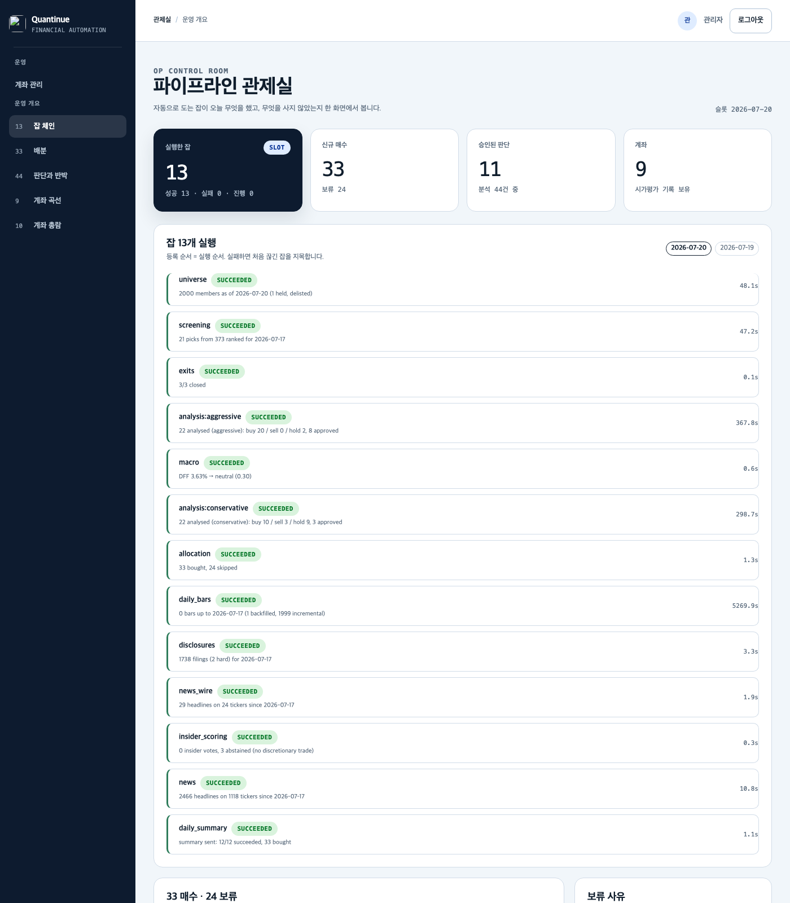
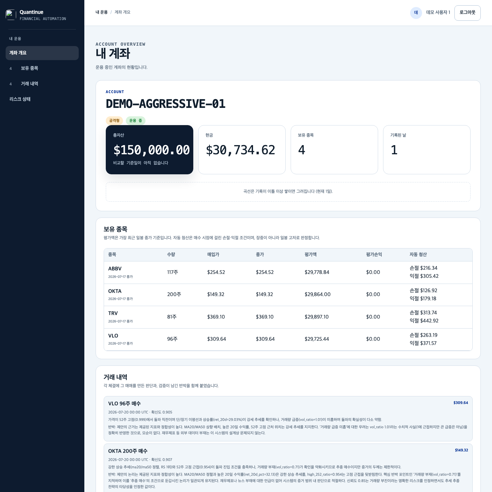
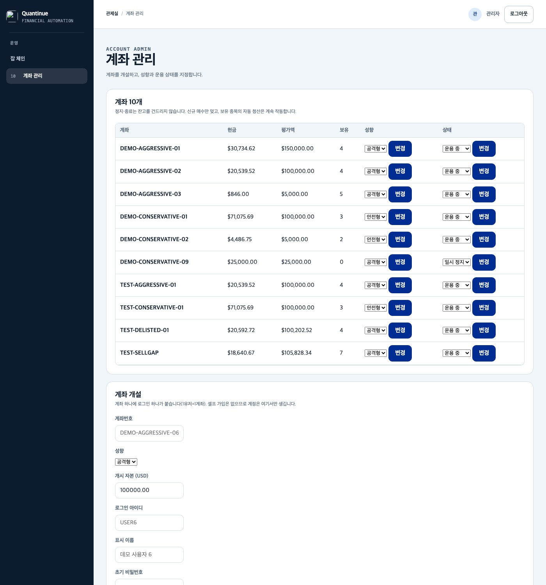

매일 아침 스스로 도는
AI 모의 운용 시스템
시세·공시·뉴스는 실물 데이터로 받고, 판단은 LLM 두 성향이 내리고, 크리틱이 반박하고, 돈은 모의 계좌에서만 움직인다. 사람이 누르는 버튼은 없다 — 등록 JOB 14종이 각자의 주기에 맞춰 돌고, 모든 판단은 자기 근거를 가리키는 계보(FK)로 원장에 남고, 하루의 결과는 텔레그램 한 통으로 온다.
watch=true, rejudge=false,
stream=false다. 5445 migration과 현재 HEAD의 8020 OpenAI
재기동, poll-only Gate A까지 완료했다. 다음은 clean OpenAI 슬롯,
rejudge Gate B, stream 순서다.
처음 읽는 분께 — 문서 세 개와 읽는 순서
Quantinue 문서는 3부작이고, 이 문서는 그중 둘째(설계 정본)다. 배경지식 없이 처음 접한다면 아래 순서가 가장 빠르다.
| 순서 | 문서 | 무엇을 주나 |
|---|---|---|
| 1 | 하루의 해부 | 여기서 시작할 것. 실제로 돈 하루(2026-07-21)를 체결 하나의 계보로 따라간다 — 픽이 되고, LLM이 제안하고, 크리틱이 반박하고, 계좌에 계획이 서고, 체결되기까지. 설치·설정 없이 읽기만 하면 되고, 30분이면 시스템의 사고방식이 잡힌다. |
| 2 | 이 문서 (설계 정본) | 현재 시스템의 계약 — JOB 12종+조건부 1이 각각 무엇을 먹고 내놓는지, 데이터 모델이 왜 이렇게 생겼는지, 확정 결정 D1~D8과 그 이유, 그리고 의도적으로 안 만든 것. |
| 3 | 기술 부록 | 과정과 내부 — 10일 연대기, 실행에서만 잡힌 결함 27건, 코드 구조 맵, 28테이블 ERD. 코드를 열기 전의 지도다. |
.md 문서·코드 파일은 GitHub로 연결해 뒀다 — HTML만
받았어도 링크는 열린다. 특히 켜고·보고·끄는 운영 방법의 정본은
docs/operations-runbook.md이고,
이 3부작은 그걸 대신하지 않는다: 여기는 "왜 이렇게 생겼나", 거기는 "어떻게 돌리나"다.
직접 띄워 보기 — 키 없이 3분
읽다가 화면이 궁금해지면 바로 띄울 수 있다. 기본값이 전부 오프라인이라
외부 키·네트워크·과금 없이 뜬다 (Python은 uv가 관리한다):
| 무엇을 | 어떻게 | 결과 |
|---|---|---|
| 로컬 실행 | git clone https://github.com/jaymunsh/quantinue.git cd quantinue/app-v2 && cp .env.example .env && uv sync uv run uvicorn quantinue.main:app --reload |
http://localhost:8000 — fixture 시세 · 메모리 저장소 · mock LLM · 모의 브로커 |
| PostgreSQL까지 | docker compose up --build --wait | http://127.0.0.1:8011 · DB 127.0.0.1:5445 (최초 볼륨 생성 시 db/schema.sql 자동 적용) |
행동 반경은 .env의 모드 스위치 4개가 정한다 — 전부 안전한 쪽이 기본값이다:
| 스위치 | 기본 | 선택지 |
|---|---|---|
| QUANTINUE_DATA_MODE | fixture | fixture(오프라인 고정 데이터) / public(키 없는 공개 소스). 실물 시세·뉴스 수집은 별도의 QUANTINUE_ALPACA_API_KEY가 필요하다 |
| QUANTINUE_DATABASE_MODE | memory | memory / postgres |
| QUANTINUE_LLM_MODE | mock | mock(결정론 고정값) / local(OpenAI 호환 /v1 서버) / openai(과금 — 요율 미선언 모델은 기동 거부) |
| QUANTINUE_BROKER_MODE | mock | mock / alpaca(페이퍼 전용 — live 엔드포인트는 설정 검증이 거부한다). 실제 주문 제출은 QUANTINUE_TRADING_ENABLED=true까지 이중 잠금 |
전체 변수 목록과 각 값의 의미는 app-v2/.env.example의 주석이 정본이다.
운영 관측 인스턴스(백그라운드 잡·장중 감시)는 일반 uvicorn이 아니라
./scripts/run_observation.sh로만 시작한다 — 이 실행기만 잡 소유권을 켜고, 로컬 잠금이 중복 실행을 거부한다.
무엇을 하는 시스템인가
Quantinue는 미국 주식 모의 운용을 무인으로 돌리는 시스템이다. 매일 뉴욕 세션일에
한 번, 시가총액 상위 2,000종목의 세계를 원장(PostgreSQL)에 담고 → 그 원장만 보고
오늘 깊이 볼 종목 20여 개를 고르고 → LLM이 성향별로 판단하고 크리틱이 반박하고 →
살아남은 판단만 모의 계좌에서 사고판다. 결과는 화면 여섯으로 지켜본다 — 관제실(GET /admin) · 운영 기준(/admin/schedule) · 작동 로그(/admin/logs) · 계좌 관리(/admin/accounts) · 내 계좌(/me) · 로그인(/login). GET /는 역할별 갈림길이다.
시세 · 공시 · 뉴스 · 금리"] --> B["📒 원장
PostgreSQL"] B --> C["🔍 선별
DB 랭킹 → 오늘의 픽"] C --> D["🤖 판단 ×2 성향
LLM 제안 + 크리틱 반박"] D --> E["💰 집행
모의 계좌 매수 · 청산"] E --> B
30초 요약 — 모든 화살표는 DB를 거친다. JOB끼리 직접 손을 잡지 않는다.
1차(MVP-1)와 무엇이 다른가
1차는 종목 하나가 역할 01~11을 순서대로 통과하는 선형 러너였다.
최종 프로젝트는 그 러너를 삭제하고(커밋 1a48aea) 서로 독립인 등록 JOB 14종으로
재편했다. 이 문서에서 2차 신규 배지가 붙은 것은
1차에 없던 구성 요소다.
| 1차 (MVP-1) | 최종 프로젝트 | |
|---|---|---|
| 실행 단위 | 종목 1개 × 역할 11단계 선형 런 | 등록 JOB 14종 — 서로 독립, DB로만 통신 2차 신규 |
| 실패 반경 | 한 단계가 죽으면 런 전체 실패 | 한 JOB이 죽어도 나머지는 어제 데이터로 돈다 |
| 실행 방식 | 수동 트리거 + 사이클 스케줄러 | mvp2.jobs.enabled=true — 스스로 돈다, 수동 트리거 없음 2차 신규 |
| 멱등 축 | pipeline_runs (run_id · cycle_ts) | tb_job_run PK (job_name, slot_date) = "JOB 하나는 하루 한 번" 2차 신규 |
| 분석 범위 | 종목당 API 1콜 → 500종목 캡 | 일봉 원장 → 전 유니버스 DB 랭킹, API 0콜 2차 신규 |
| 체결 | Alpaca 페이퍼 "무장" 대기 | MockBroker 로컬 시뮬이 최종 상태 (D1·D2) |
용어 30초 사전
이 문서를 읽는 데 필요한 말은 이게 전부다.
| 용어 | 뜻 |
|---|---|
| JOB | 하루에 한 번 도는 작업 단위. 유니버스 수집, 스크리닝, 분석 같은 것 하나하나가 JOB이다. 서로 독립이고 DB로만 손을 주고받는다. |
| 슬롯(slot) | JOB이 돈 날짜(slot_date). "JOB 하나는 하루 한 번"의 그 하루. 관제실에서 ?slot=YYYY-MM-DD로 과거 슬롯을 볼 수 있다. |
| 세션(session) | 뉴욕 거래일. JOB은 보통 개장 전에 돌므로 직전에 닫힌 세션의 데이터를 본다. |
| 픽(pick) | 오늘 LLM이 깊이 볼 종목. 스크리닝 랭킹 상위 20 + 보유 전부(tb_daily_pick). |
| 성향(inv_type) | 투자 스타일 2종 — aggressive(공격형)·conservative(안전형). 판단·계좌·문턱이 성향별로 갈린다. |
| 확신도(conviction) | 0~1 사이 점수. 여러 근거(스크리닝 점수·LLM 판단·인사이더 표)의 평균. 성향별 문턱을 넘어야 매수 후보가 된다. |
| 표(vote) | 확신도 평균에 참여할 자격. 아무 데이터나 표를 갖지 못한다 — 출처와 내용이 검증된 것만. |
| 크리틱(critic) | 제안(role_07)을 반박하는 둘째 LLM(role_08). 크리틱을 통과(pass)한 판단만 집행된다. |
| 계보(lineage) | 판단이 자기 근거를 FK로 가리키는 것. "이 매수는 어느 픽·어느 공시·어느 국면을 보고 내렸나"를 DB가 강제한다. |
| 하드 이벤트 | 상장폐지·거래정지 같은, 판단 없이 즉시 반응해야 하는 사실. 권위 있는 쪽(SEC 폼)만 판정한다. |
| 출처 등급 | 뉴스 매체 신뢰도 — allow(0.95) / gray(0.50) / block. 문턱(0.55) 미달이면 투표권이 없다. |
| 재량 거래 | 내부자가 스스로 정해서 한 매매(코드 P·S이면서 10b5-1 계획매매가 아닌 것). 보상 지급·계획 매도는 재량이 아니므로 표가 없다. |
| MockBroker | 체결 시뮬레이터. 외부 호출 0건 — 주문을 받으면 지정가 그대로 체결됐다고 기록한다. |
| 멱등(idempotent) | 같은 날 두 번 돌아도 결과가 한 번 돈 것과 같음. 모든 JOB의 기본 계약. |
JOB 체인 12종 + 조건부 1 2차 신규
하루의 운용은 JOB 12종이 등록 순서대로 도는 것이다. 순서 자체가 계약이다 —
수집이 판단보다 앞이라 오늘 시세·공시로 판단하고, 청산이 배분보다 앞이라 판 돈과
빈 자리로 산다. 맨 끝에 조건부 13번째가 있다: 일일 안내(daily_summary)는
텔레그램 키가 있을 때만 등록된다. 출처: orchestration/job_factory.py build_job_runner().
상장 목록 (주 1회)"] --> J2["2 · daily_bars
일봉 — 증분 + 자동 백필"] J2 --> J3["3 · disclosures
SEC 공시 · 전 시장 하루치"] J3 --> J4["4 · news
Alpaca 헤드라인 · 전 시장"] J4 --> J5["5 · news_wire
보도자료 RSS (GNW·PRN)"] J5 --> J6["6 · macro
금리 → 시장 국면"] end subgraph D ["② 판단 — 원장만 보고 고른다"] direction TB J7["7 · screening
전 유니버스 DB 랭킹 · API 0콜"] --> J8["8 · insider_scoring
Form 4 재량 거래 → 표"] J8 --> J9["9 · analysis:aggressive
LLM 판단 + 크리틱"] J9 --> J10["10 · analysis:conservative
LLM 판단 + 크리틱"] end subgraph A ["③ 집행 — 모의 계좌가 움직인다"] direction TB J11["11 · exits
청산 — 손절·익절·시간·매도판단"] --> J12["12 · allocation
배분 — 지갑이 허락할 때까지 산다"] J12 -.-> J13["13 · daily_summary
일일 안내 (텔레그램 키 있을 때만)"] end C --> D --> A
등록 순서 = 실행 순서 = 데이터 의존성. 한 틱 안에서 순차로 돈다. 점선(13)은 조건부 등록.
순서가 계약인 이유
- 유니버스가 일봉보다 앞 — 그 주에 새로 든 종목이 봉 없이 남지 않는다.
- 수집이 판단보다 앞 — 분석이 오늘의 증거(시세·공시·국면)를 같은 틱 안에서 읽는다.
- 스크리닝이 인사이더채점보다 앞 — 픽이 있어야 채점 결과를 붙일 FK 자리가 선다.
- 인사이더채점이 분석보다 앞 — 한 슬롯 늦게 도착하는 증거는 증거가 아니다.
- 분석이 청산보다 앞 — 오늘의 매도 판단이 오늘의 청산에 닿는다.
- 청산이 배분보다 앞 — 판 돈과 빈 자리(보유 수 한도)로 사야 "자리가 없어 못 산다"가 하루 늦지 않는다.
tb_job_run) — PK (job_name, slot_date)가
"JOB 하나는 하루 한 번"을 DB 수준에서 강제한다. 스케줄러는 60초마다 깨어나지만
JOB 본문은 예약에 성공한 틱에서만 돈다. 주기는 요일 고정이 아니라 마지막 성공으로부터의
경과일이라, 앱이 꺼져 있던 날은 다음 기동 때 이어서 돈다. 실패한 슬롯만 같은 날 재시도된다.
주기 소유자는 config/pipeline.yaml의 mvp2.jobs.cadences(D3) —
universe 7일, 나머지는 기본 일 1회.
수집 JOB 6종 — 무엇을 먹고 무엇을 내놓는가
| # | JOB | 먹는 것 (입력) | 내놓는 것 (출력) | 주기 |
|---|---|---|---|---|
| 1 | universe | NASDAQ 상장 피드 + 현재 보유 | tb_universe — 시총 상위 2,000 + 상장폐지된 보유의 이월(held_delisted) |
7일 |
| 2 | daily_bars | Alpaca 일봉 API (feed=iex, 배치 200종목/콜) |
tb_daily_bar — 원장이 아는 마지막 날부터 직전 세션까지 증분. 첫 실행은 자동 백필(400일 창) |
1일 |
| 3 | disclosures | SEC 데일리 인덱스 — 전 시장 하루치를 1콜, 무키 | tb_disclosure_raw — 하드 이벤트(상장폐지·정지) 판정 포함 |
1일 |
| 4 | news | Alpaca 뉴스 API — 전 시장, 직전 세션부터 실행 시점까지 | tb_news_raw — 헤드라인만. 투표가 아니라 분석의 맥락으로 쓰인다 |
1일 |
| 5 | news_wire | 보도자료 와이어 RSS 2종 (GlobeNewswire·PR Newswire), 무키 | tb_news_raw — 수집만 하고 채점은 안 한다 (기각 근거는 §안 만든 것) |
1일 |
| 6 | macro | FRED 금리(DFF) | tb_macro — 국면(risk_on/neutral/risk_off)과 risk_score. 없으면 지어내지 않고 빈손으로 끝낸다 |
1일 |
tb_*_raw)에는 의도적으로 FK가 없다.
판단 JOB 4종
| # | JOB | 먹는 것 (입력) | 내놓는 것 (출력) | LLM |
|---|---|---|---|---|
| 7 | screening | 일봉 원장 전체 (전 유니버스, API 0콜) | tb_daily_pick — 창 지표(ret_20d·ma20/50·52주고가비·RSI) 랭킹 상위 20 + 보유 전부 |
— |
| 8 | insider_scoring | SEC EDGAR Form 4 (픽에 걸린 것만, 무키) | tb_disclosure_signal — 재량 거래(P·S ∧ ¬10b5-1)만 표: 매수 0.80 / 매도 0.30. 기권은 행을 아예 안 쓴다 |
— (결정론) |
| 9·10 | analysis ×2 | 픽 + 기술 지표 + 헤드라인 5건 + 공시 + 국면 + 인사이더 표 | tb_strategist_signals(side·확신도·서사) + tb_critic_verdict(반박 평결). 성향 하나가 JOB 하나 |
성향당 1콜/종목 + 크리틱 |
집행 JOB 2종 + 조건부 안내 1
| # | JOB | 먹는 것 (입력) | 내놓는 것 (출력) |
|---|---|---|---|
| 11 | exits | 보유 종목의 직전 세션 관측 + 오늘의 매도 판단(크리틱 통과분) | close 주문·체결 — 손절(−15%)·익절(+20%)·시간 청산(10거래일)·하드 이벤트·매도 판단의 3층 판정. 동시 발동 시 손절 우선(D5) |
| 12 | allocation | 크리틱 통과한 buy 후보 전체 + 계좌별 지갑 | tb_order(bracket)·tb_fill·tb_order_plan — 후보를 계좌 앞에 놓고 지갑이 허락할 때까지 산다. 못 산 것은 사유와 함께 기록 |
| 13 | daily_summary 조건부 | 그날 슬롯의 tb_job_run·체결 요약 |
텔레그램 한 통 — ✅ 슬롯 · 잡 12/12 성공 · 신규 매수 3건. 기능이 아니라 멱등 때문에 잡이다: 하루 한 번 보장을 tb_job_run PK가 DB로 강제한다. 키가 없으면 등록 자체가 안 된다 (§알림) |
실측 — 이 체인은 실제로 이렇게 돌았다
724ddc2)feed=iex 전용. 우리 최악 피크(최초 백필)는
분당 ~75~88콜로 여유 2.3배라 레이트 리미터를 붙이지 않았다 — 안 터지는 것에 방어를 붙이면
그게 유령이다. 단, 인트라데이 다회 사이클(로드맵 R3)을 켜면 이 여유가 사라지므로 그때 한도를 먼저 본다.
장중 층 — 1분 방어와 사건 재판단 2차 신규
위의 JOB 체인은 하루 한 번 돈다. 그 아래에 정규장 동안만 도는 층이 하나 더 있다 —
2차가 풀려던 문제("아침에 산 종목이 오후에 급락해도 다음 날까지 무방비")의 답이다.
담당은 orchestration/watch_runner.py의 WatchRunner이고, 일일 JobRunner와
독립적으로 정규장에만 붙는다. 하는 일은 성격이 다른 두 가지다.
(정규장 전용)"] --> P["🛡 방어선 점검
보유 종목 손절·익절선
LLM 0콜"] P -->|발동| X["즉시 모의 청산
(exits와 같은 내구 경로)"] S["📡 사건 증분 수집
SEC 30분 · 뉴스 15분 · 와이어 10분"] --> N["결정론 정규화
tb_normalized_event
(append-only)"] N --> R["관련 종목 라우팅"] R -.->|"rejudge=true일 때만"| J["전략가·크리틱 재호출
→ 변경 판단의 표적 주문
여기서만 LLM"]
위 줄(방어선)은 판단하지 않는다 — 살 때 정한 선을 넘었는지만 본다. 아래 줄(재판단)만 LLM을 부르고, 그마저 스위치 뒤에 있다.
| 갈래 | 주기 | 하는 일 | LLM | 운영 상태 |
|---|---|---|---|---|
| 방어선 (watch) | 1분 | 보유 종목의 손절·익절 브래킷이 발동했는지 점검하고, 발동하면 exits와
같은 내구 경로로 즉시 모의 청산한다. 손절선은 이때 정하는 게 아니라
매수 시점에 이미 tb_order.stop_price에 적혀 있다. |
0콜 | 켜짐 watch=true |
| 사건 수집·정규화 | SEC 30분 뉴스 15분 와이어 10분 |
증분 수집 → 결정론 규칙으로 tb_normalized_event에 정규화(append-only,
공급자 순서 UNIQUE) → 관련 종목 라우팅. 여기까지는 판단이 아니라 기록이다. |
0콜 | 켜짐 |
| 재판단 (rejudge) | 사건 시 + NY 10:00·12:45·15:15 스윕 |
±5% 급변(move_trigger_pct)이나 라우팅된 사건이 있으면 그 종목만
전략가·크리틱을 재호출하고, 판단이 바뀌면 표적 주문을 낸다. 같은 종목 30분 쿨다운,
위급 매도용 예산 20% 예약, 유료 콜은 tb_watch_sweep_item이
at-most-once로 펜싱한다(dispatched는 재시도 금지). |
여기서만 | 꺼짐 rejudge=false |
| 실시간 피드 (stream) | — | 폴링 대신 실시간 시세 구독(30종목 상한). 켜지면 방어선의 반응이 틱 단위로 빨라진다. | 0콜 | 꺼짐 stream=false |
JOB별 상세 — 12종 각각의 계약
각 JOB이 정확히 무엇을 하고, 무엇이 없으면 어떻게 행동하고, 왜 그렇게 설계했는지.
설명의 근거는 orchestration/job_factory.py와 각 잡 모듈의 주석,
값은 config/pipeline.yaml이다.
1 · universe 거래 가능한 세계를 다시 그린다주 1회
하는 일: 상장 피드에서 시총 > 0인 종목을 시총 내림차순으로 잘라 상위
2,000(universe_size)을 스냅샷으로 저장한다. 정렬을 우리가 다시 하는 이유 —
잘릴 때 남는 것이 임의의 조각이 아니라 큰 이름들이어야 한다.
보유 이월(held_delisted): 거래 가능 범위의 정의는 "상장 피드"가 아니라
"상장 피드 ∪ 우리가 든 것"이다. 상장폐지된 보유가 여기서 빠지면
tb_daily_pick(FK) → sell 시그널 → close 주문 사슬이 통째로 끊겨
팔아야 할 바로 그 종목을 팔 수 없다. 이월은 절단 뒤에 더한다 — 먼저 섞으면
시총 낮은 폐지 종목이 절단에 걸려 문제가 되돌아온다. 한 번도 유니버스에 없던 종목은
지어내지 않고 스크리닝의 unlisted 보고로 남긴다.
없으면: 스크리닝이 "no universe snapshot"으로 멈춘다 — 유니버스 없이 고른 상위 N은 무엇의 상위인지 알 수 없다.
NASDAQ 상장 피드 + 보유출력 tb_universe주기 7일요약 예 2013 members (13 held, delisted)2 · daily_bars 원장이 아는 마지막 날부터 직전 세션까지일 1회
하는 일: 보유 + 유니버스 전 종목의 일봉을 Alpaca(feed=iex, 요청당
200종목 배치)에서 받아 tb_daily_bar를 채운다. 창을 두 갈래로 나눈다:
- cold(봉이 하나도 없는 종목): 400일(
history_days) 전체 창. 랭킹의 가장 긴 지표가 52주 고가비라 그보다 넉넉해야 한다. - warm(이미 있는 종목): 가장 앞선 종목의 다음 날부터. 뒤처진 종목에 맞추면 실행마다 수십만 행을 재수신한다(실측: 2회차가 30만 봉 재수신) — 뒤처짐의 원인은 대부분 거래소에 봉이 없는 것(폐지·정지)이라 소급해도 채워지지 않는다.
백필이 별도 JOB이 아닌 이유: "처음 한 번만 도는 잡"은 실패한 날과 성공한 날의 시스템을 서로 다른 물건으로 만든다. 매번 "마지막으로 아는 날부터"를 채우면 첫 실행은 백필, 이후는 증분 — 경로가 하나뿐이고 중단된 백필도 다음 실행이 이어받는다.
수용한 비용: 거래소에 봉이 아예 없는 종목(실측 2,000 중 1개)은 매번 cold로 남아 전체 창을 다시 묻는다 — 요청 1건이라 "찾아봤지만 없더라" 기록 자리를 만들지 않았다.
Alpaca /v2/stocks/bars출력 tb_daily_bar실측 최초 53.7만 봉 / 43.6초요약 예 1204 bars (1 backfilled, 2012 incremental)3 · disclosures 전 시장 하루치 공시를 1콜로일 1회 · 무키
하는 일: SEC 데일리 인덱스에서 직전 세션의 전 시장 공시를 받아
tb_disclosure_raw에 적재하고, 하드 이벤트(상장폐지·거래정지)를 플래그한다.
종목 목록을 받지 않는 유일한 수집 JOB이다 — 인덱스가 그날 전부를 주므로 누구를 볼지 미리 정할 필요가 없고, 그래서 스크리너에서 탈락한 보유 종목의 상장폐지 공시도 자연히 걸린다. 그게 이 JOB의 존재 이유다.
거래일만 묻는 책임이 이 JOB에 있다: SEC는 없는 날짜의 인덱스에 403을 주는데 그것은 User-Agent 정책 차단과 구분되지 않는다. 그래서 어댑터는 아무 에러도 삼키지 않고, JOB이 캘린더로 직전 세션을 계산해서 묻는다.
SEC daily index출력 tb_disclosure_raw요약 예 2841 filings (2 hard) for 2026-07-174 · news 전 시장 헤드라인 — 투표가 아니라 맥락일 1회
하는 일: Alpaca 뉴스 API에서 직전 세션부터 실행 시점까지의 전 시장
헤드라인을 받아 tb_news_raw에 적재한다. 창의 끝이 세션이 아니라 실행일인 이유 —
주말·프리마켓 기사를 다음 실행이 다시 줍지 않기 위해서다.
공시와 같은 자리에 같은 이유로 선다: 종목별 폴링이면 콜 수가 종목 수에 비례해 분석 범위 밖 종목을 영영 못 본다.
여기서 하드 이벤트를 판정하지 않는 것도 의도다 — 상장폐지·거래정지는 권위 있는 쪽(SEC 폼)이 판정한다. 헤드라인 키워드로 매도를 발동시키면 "Trading Halt" 같은 제목 하나가 포지션을 날린다. 수집된 헤드라인은 분석 JOB의 증거 종합 맥락으로만 들어간다 (출처 등급 gray 0.50 < 문턱 0.55라 투표권 없음).
Alpaca news (limit 50/페이지)출력 tb_news_raw실측 767기사 → 1,440행 / 14.5초요약 예 1440 headlines on 728 tickers since 2026-07-175 · news_wire 보도자료 RSS — 자격 있는 헤드라인의 수집 2차 신규일 1회 · 무키
하는 일: GlobeNewswire·PR Newswire RSS에서 보도자료 헤드라인을 받아
같은 tb_news_raw에 적재한다(출처 등급 allow 0.95).
Alpaca 뉴스에 합성하지 않고 별도 JOB인 이유: JOB 격리가 이 시스템의 실패 경계라서다. 실측으로 Alpaca 키가 죽은 날에도 allow 등급 헤드라인 수집은 계속되어야 한다. SEC처럼 무키·무비용이라 등록에 조건이 없다.
채점(2단계)은 하지 않는다 — 와이어 뉴스가 픽을 덮지 않는다는 실측으로 기각됐다 (§안 만든 것). 수집만 유지하는 이유: 비용이 0이고, 커버리지가 바뀌면(유니버스 확장 등) 그때 2단계를 재평가할 데이터가 이미 쌓여 있게 된다.
GNW·PRN RSS출력 tb_news_raw실측 29행 / 24티커6 · macro 금리 하나로 시장 국면을 정한다일 1회
하는 일: FRED 금리(DFF)를 받아 regime_from_rate로 국면
(risk_on / neutral / risk_off)과 risk_score를 계산해 tb_macro에 upsert한다.
분석 JOB이 latest_macro로 읽고, 국면별 확신도 감점
(macro_penalty_table)과 위험 국면 행동(risk_off_action)의 입력이 된다.
없으면 지어내지 않는다: 관측이 비면 중립을 저장하는 대신 빈손으로 끝낸다 —
없는 국면을 중립으로 저장하면 그 행이 이틀 동안 "신선한 관측"으로 판단에 들어간다.
latest_macro가 None이면 부르는 쪽은 감점도 차단도 하지 않는다.
멱등: as_of를 자정으로 고정해 같은 날 재실행이 같은 행을 덮어쓴다 —
시계에 의존하지 않는다.
FRED DFF출력 tb_macro실측 neutral / 0.302요약 예 DFF 4.33% → neutral (0.30)7 · screening 전 유니버스 DB 랭킹 — API 0콜 2차 신규일 1회
하는 일: 저장된 봉만으로 전 유니버스를 줄 세워 오늘의 분석 범위를
tb_daily_pick에 쓴다. 필터: 종가 ≥ $5 · 20일 평균 거래대금 ≥ $20M ·
이력 ≥ 60세션(ma50이 의미를 가지려면 50세션은 있어야 하고, 신규 상장은 52주 고가가
곧 자기 최고가라 돌파로 오인된다). 지표: ret_20d·ma20/50·
high_252_ratio·rsi 등 창 지표.
범위 = 상위 20(llm_depth) ∪ 보유 전부. 보유가 캡과 무관한 이유는
판단이 아니라 구조다 — 시그널이 tb_daily_pick을 FK로 참조하므로, 범위 밖인
보유 종목은 청산 시그널을 남길 자리가 없다. 유니버스에 없는 보유(이월도 안 된 것)는
픽을 만들 수 없으므로 조용히 지나가지 않고 요약에 남긴다.
구 방식과의 차이: 구 role_02·03은 지표를 종목당 1콜로 받아 500종목 캡이 필요했고 캡 밖은 아무도 못 봤다. 봉이 원장에 앉은 지금은 캡이 근거를 잃었다.
tb_daily_bar + tb_universe출력 tb_daily_pick실측 1,998 → 373 → 픽 20 / 3.7초요약 예 21 picks from 373 ranked (skipped 1 unlisted holdings)8 · insider_scoring Form 4 재량 거래 → role_07의 표 2차 신규일 1회 · 무키 · 결정론
하는 일: 오늘 픽에 걸린 SEC Form 4를 EDGAR에서 받아 파싱하고, 재량 거래
(코드 P·S ∧ ¬10b5-1)만 표로 만들어 tb_disclosure_signal에 쓴다
(매수 0.80 / 매도 0.30, 소유자 mvp2.insider). 기권(부여 A·세금 F·옵션행사
M/C·계획매매)은 행을 아예 쓰지 않는다 — 중립값을 쓰면 그게 표가 되어 확신도를 정보 없이
끌어내린다.
성향 인자가 없는 것이 요점이다 — 채점은 "무엇이 사실인가"를 묻고 답이 성향과 무관하다. 그래서 페르소나 수만큼 반복하지 않고 한 번만 돌며, 두 분석 JOB이 같은 표를 읽는다. LLM도 없다 — 입력이 전부 범주형 사실(거래 코드·10b5-1 플래그)이라 파서는 판단하지 않고 낭독한다.
순서: 스크리닝 뒤(픽이 있어야 FK가 선다), 분석 앞(한 슬롯 늦게 도착하는 증거는 증거가 아니다).
SEC EDGAR Form 4 XML출력 tb_disclosure_signal.sentiment_score실측 TPL 0.80 · PAYX 0.30, 5 기권요약 예 2 insider votes, 5 abstained (no discretionary trade)9·10 · analysis:aggressive · analysis:conservative 성향 하나가 JOB 하나일 1회 × 2 · LLM
하는 일: 오늘의 픽 각각에 대해 — 기술 지표, 최신 헤드라인 5건
(headlines_per_ticker), 공시, 국면, 인사이더 표를 증거로 —
LLM이 side(buy/sell/hold)·확신도·서사를 내고(tb_strategist_signals),
크리틱이 같은 증거로 반박해 평결을 남긴다(tb_critic_verdict).
게이트(출처 신뢰·증거 나이·강악재·매크로 감점·과신 상향)는 코드가 강제한다.
성향이 JOB 축인 이유: 원장의 유일성 축이 inv_type이라 페르소나
하나가 JOB 하나다(analysis:aggressive·analysis:conservative).
두 페르소나는 서로의 결과를 보지 않는다 — 원장에서 inv_type으로 갈린다.
실패를 숨기지 않는다: 모델 에러로 건너뛴 종목 수를 요약에 남긴다 — 범위가
몇이었는지가 원장에 남아야 한다. 방향은 코드가 정한다: 모델은 문턱을 모른 채 이유를
쓰고, StrategyOutput.from_model이 확신도와 성향 문턱을 비교한다.
픽+지표+뉴스+공시+국면+표출력 tb_strategist_signals + tb_critic_verdict실측 ~20초/종목 · 2성향 22종목 ≈ 15분요약 예 20 analysed (aggressive): buy 18 / sell 0 / hold 2, 7 approved11 · exits 보유만 보고, 3층으로 판정한다일 1회
하는 일: 보유 종목마다 관측을 조립해 청산 규칙을 적용하고, 팔아야 하면
close 주문·체결을 만든다. 판정은 3층이다: ① 하드 이벤트(상장폐지·정지 — 판단 없이 청산)
② 브래킷·시간(손절 −15% · 익절 +20% · 보유 10거래일, 동시 발동 시 손절 우선 D5)
③ 오늘 분석의 매도 판단(크리틱 통과분, 성향별 sell_signal_profiles).
관측을 두 날짜에서 조립한다: 시세·하드 이벤트는 직전 세션의 사실이고, 매도 판단은 오늘 분석 JOB이 낸 것이다. 분석 → 청산 순서의 이유가 여기 있다. 다만 보유일 계산은 오늘 기준이다 — "오늘까지 며칠 들고 있었나"이지 "어제까지"가 아니다.
판단이 있어도 관측이 없으면 더하지 않는다 — 없는 관측을 지어내면 "시세를 못 받은 날은 아무것도 하지 않는다"는 규칙이 무력해진다. 수집 실패가 매도로 둔갑하지 않는다. 청산은 보유만 본다 — 유니버스까지 넘기면 2,000종목 관측을 읽고 하나도 쓰지 않는다.
보유 + tb_daily_bar 관측 + 오늘 판단출력 tb_order(close) + tb_fill요약 예 1/12 closed12 · allocation 후보 전체를 계좌 앞에 놓고, 지갑이 허락할 때까지 산다 2차 신규일 1회
하는 일: 크리틱을 통과한 buy 후보 전체를 계좌마다 순서대로 대보며, 지갑 규칙이
허락하는 동안 산다: max_positions(보유 수) · max_weight(종목 비중) ·
min_cash_ratio(최소 현금) · daily_loss_limit(당일 손실 —
분모는 tb_account_equity_daily의 아침 스냅샷) ·
daily_new_order_cap(하루 신규 5건). 매수는 브래킷(진입 + 손절 −15% +
익절 +20%)으로 만들어 MockBroker가 체결한다.
못 산 것도 전부 기록한다: 계좌×후보마다 tb_order_plan에
planned(수량 포함) 또는 skipped(사유 필수)가 남는다 — 관제실의 "왜 못 샀나" 순위가
여기서 나오고, 문턱 조정의 입력이 된다.
청산 뒤인 이유: 판 돈과 빈 자리로 사야 "자리가 없어 못 산다"가 하루 늦지 않는다.
실 스모크(2026-07-20): 계좌 10개에서 33 매수 · 24 보류 — 보류 사유는 min_cash 19 · daily_order_cap 3 · insufficient_equity 1 · existing_position 1. 매수 후 현금 + 포지션 = 초기 자본, 오차 0.
승인 buy 후보 + 계좌 지갑출력 tb_order(bracket) + tb_fill + tb_order_plan요약 예 33 bought, 24 skipped판단이 만들어지는 과정
매수는 세 단계를 통과해야 한다: ① 여러 근거가 확신도 평균으로 합쳐지고, ② 성향별 문턱을 넘고, ③ 크리틱의 반박에서 살아남아야 한다. LLM이 검증 없이 돈에 닿는 경로는 0개다.
(픽 랭킹 · 실측 0.94 안팎)"] --> V I["인사이더 표
(재량 매수 0.80 · 재량 매도 0.30)
표가 없으면 평균에 안 들어감"] --> V L["LLM 판단
(증거 종합 · 성향별)"] --> V M["매크로 감점
(국면 risk_score 구간별 −0.05~−0.40)"] --> V V{"확신도 = 평균"} --> T{"성향 문턱
aggressive ≥ 0.65
conservative ≥ 0.75"} T -- "미달" --> H["hold — 아무 일도 없다"] T -- "통과" --> CR{"크리틱 반박
승인 ≥ 0.70
(확신 ≥ 0.90이면 ≥ 0.80)"} CR -- "reject" --> H CR -- "pass" --> B["매수 후보 → allocation JOB"]
뉴스는 이 그림에 없다 — 투표권이 없고, LLM 판단의 참고 맥락으로만 들어간다.
실제 숫자로 보는 하루 — 2026-07-20, 실 EDGAR 데이터
픽 59종목 중 Form 4가 걸린 7종목을 채점한 날. 5종목은 기권 (계획매매·보상 지급 — 재량이 아니므로 표 없음), 2종목만 표를 받았다:
| 종목 | 인사이더 표 | 근거 | 최종 확신도 |
|---|---|---|---|
| 표 없는 종목 | — | Form 4 없음 또는 기권 | ~0.87 |
| TPL | 0.80 (매수) | 10% 보유자의 공개시장 자발 매수(코드 P) | 0.833 |
| PAYX | 0.30 (매도) | 거래 24건 중 재량 매도 1건 — 나머지는 전부 기계적 거래 | 0.651 ↓ |
하방 표 하나가 확신도를 0.87 → 0.651로 끌어내렸다.
상수가 아니라 방향 있는 분포다 — 이것이 "표"가 하는 일이다. (dev-handoff.md R8 절, 커밋 610bc30)
인사이더 채점 — 판단하지 않고 낭독한다 2차 신규
Form 4는 구조화 XML이라 LLM 없이 결정론으로 채점한다. 픽에 걸린 Form 4 23건·거래 79건을 전수 실측한 분포가 규칙의 근거다:
| 거래 코드 | 건수 | 성격 | 표? |
|---|---|---|---|
| A (부여) | 26 | 보상 — 내부자가 고른 게 아니다 | 기권 |
| S (매도) | 38 | 큰 묶음은 전부 10b5-1 계획매매 | 계획이면 기권, 재량이면 0.30 |
| F (세금 원천) | 10 | 보상의 기계 | 기권 |
| M · C (옵션행사) | 4 | 보상의 기계 | 기권 |
| P (공개시장 매수) | 1 | 자기 돈으로 시장에서 샀다 | 0.80 |
매수 표(0.80)가 매도 표(0.30)보다 강한 이유: 내부자가 파는 이유는 분산·세금·주택 구입 등
여럿이지만, 자기 돈으로 시장에서 사는 이유는 사실상 하나다. 표에 크기가 없는 이유는
정직함이다 — "얼마부터 큰 거래인가"를 잰 데이터가 아직 없다. 기권이 행을 아예 안 쓰는 이유:
중립값 0.5를 쓰면 그게 표가 되어 확신도를 정보 없이 끌어내린다(폼종류 채점 기각의 교훈).
문턱 소유자는 pipeline.yaml의 mvp2.insider.
성향 2종 — 같은 증거, 다른 문턱
성향은 실존 방법론에 정박했다: aggressive는 오닐(CAN SLIM)·미너비니(SEPA)·드러켄밀러,
conservative는 하워드 막스(2차적 사고)·리버모어(손절 규율). 버핏·그레이엄류를 뺀 이유는
우리 원장에 ROE·FCF·내재가치가 없어서다 — 없는 증거를 지어내게 하지 않는다.
값의 소유자는 pipeline.yaml의 mvp2.profiles:
| 파라미터 | aggressive | conservative | 왜 다른가 |
|---|---|---|---|
| buy_threshold | 0.65 | 0.75 | 안전형은 더 확실해야 산다 |
| sell_threshold | 0.60 | 0.50 | 안전형은 더 빨리 판다 — 확신이 흔들리면 자리를 비운다 |
| risk_off_action | penalty | no_new_buys | 위험 국면에서 공격형은 감점, 안전형은 신규 매수 중단 |
| max_positions | 10 | 5 | 지갑 규칙 — allocation JOB이 강제 |
| max_weight | 20% | 10% | |
| daily_loss_limit | 4% | 2% | |
| min_cash_ratio | 10% | 30% |
매도 문턱이 매수보다 낮은 것은 의도다 — 좋은 종목을 안 사면 기회를 놓칠 뿐이지만,
나쁜 종목을 안 팔면 손실이 계속 자란다. 하방(매도) 확신은 별도 축
(vote_bearishness)으로, 모델 점수만 본다: 스크리닝 점수(늘 높음)를
섞으면 픽을 영영 팔 수 없게 되기 때문이다.
게이트 — 코드가 막는 것
| 게이트 | 값 | 하는 일 |
|---|---|---|
| source_trust_min | 0.55 | 이보다 신뢰도 낮은 출처는 투표권 박탈 (benzinga=gray 0.50이 뉴스가 투표 못 하는 이유) |
| evidence_max_age | 2,880분 | 이보다 오래된 증거로는 매수 불가 (매도는 막지 않는다) |
| hard_negative_max | 0.15 | 강한 악재가 있으면 확신도와 무관하게 매수 차단 |
| macro_penalty | −0.05~−0.40 | 국면 risk_score 구간별 확신도 감점 (하방 판단에서는 부호가 뒤집힌다) |
| critic_approval | 0.70 | 크리틱 승인 문턱. 확신도 ≥0.90이면 0.80으로 상향 — 과신일수록 더 세게 반박당한다 |
| premarket_gap_max | 0.03 ⏳ | 분석 기준가 대비 갭이 3% 넘으면 개장 후 30분까지 신규 매수 보류 (잠정값 — 분포 관측 후 조정) |
데이터 모델 — 판단이 자기 근거를 가리킨다
이 시스템의 등뼈는 계보 FK다. 판단 행(tb_strategist_signals)은
자기가 본 픽·공시 채점·뉴스 채점·국면을 FK로 가리키고, 주문은 판단을, 체결은 주문을,
청산은 자기가 닫는 매수를 가리킨다. "왜 샀나"는 기억이 아니라 조인으로 답한다.
출처: app-v2/db/schema.sql.
계보의 척추만 그렸다. 원시 원장(tb_*_raw)·운영 로그는 의도적으로 FK 밖에 있다.
tb_strategist_signals 342건) 기준 실측을
여기 붙여 둔다.
| 컬럼 | 채움 | 읽는 법 |
|---|---|---|
| model_name · prompt_version · input_hash | 234 / 342 | 기록 배선이 들어간 07-21 이후 구간(240건)에서는 LLM이 판단한 234건 전부에 남는다 — 이 구간의 누락은 0건이다. 남는 6건은 model_provider조차 비어 있는 규칙 기반 자동 청산(손절·익절 매도)이라 애초에 프롬프트가 없다. 07-20 이전 102건은 계보 배선 자체가 없던 구간이다. |
| policy_version | 0 / 342 | 컬럼만 있고 아무도 안 채운다. 정책(config) 버전을 판단 행에 박는 배선이 아직 없다. 재현 검증은 프롬프트·입력 해시까지만 가능하고, "그때 어떤 정책값이었나"는 config 이력으로 따로 봐야 한다. |
계보 FK — 픽 (trade_date·ticker) | 342 / 342 | NOT NULL·FK로 DB가 강제한다. "어느 후보를 보고 내렸나"는 예외 없이 조인으로 답한다. |
계보 FK — 국면 (src_macro_at) | 234 / 342 | 위 재현 메타데이터와 같은 구간·같은 배선이다. |
계보 FK — 공시·뉴스 (src_disclosure_at·src_news_at) | 6 / 342 · 0 / 342 | NULL은 결손이 아니라 "그 종목·그 슬롯에 채점된 공시·뉴스가 없었다"는 뜻이다(nullable FK). 실제로 tb_disclosure_signal 8행 · tb_news_signal 5행뿐이라, 채점 채널이 판단에 닿은 사례가 아직 거의 없다. 구조는 뚫려 있고 실적이 얕은 자리로 말해야 정확하다. |
policy_version과 공시·뉴스 계보는 미배선·미적재로 남은 항목으로 말한다.
테이블 한눈에
| 그룹 | 테이블 | 무엇이 담기나 | 핵심 제약 |
|---|---|---|---|
| 세계 | tb_universe | 주간 유니버스 스냅샷 (2,000 + 이월 보유) | listing_status: listed·held_delisted |
| tb_daily_bar | 일봉 원장 — 랭킹·청산 판정·시가평가의 원천 | PK(trade_date,ticker) · OHLC 정합 CHECK | |
| tb_macro | 시장 국면 (regime · risk_score) | PK(as_of) | |
| 원시 원장 | tb_disclosure_raw | 전 시장 공시 + 하드 이벤트 플래그 | FK 없음 — 분석 범위 밖을 담는 게 존재 이유 |
| tb_news_raw | 전 시장 헤드라인 (Alpaca + 와이어 RSS) | PK(article_id,ticker) · FK 없음 | |
| tb_event_source_cursor | 소스별 증분 수집 체크포인트 | PK(source_name) · 빈 cursor 금지 | |
| tb_event_raw_document | 공급자 문서의 안정 식별자 | UNIQUE(source_name,source_document_id) · UPDATE/DELETE 거부 | |
| tb_event_raw_version | 원문·정규화 본문의 불변 버전 | UPDATE/DELETE 거부 · 문서별 version/hash UNIQUE | |
| tb_normalized_event | 결정론적 장중 사건과 공급자 순서 | source=raw document · event/source order UNIQUE · append-only | |
| tb_event_evidence_pack | 사건 판단의 불변 원문 span | raw version=event version · end≤본문 길이 · append-only | |
| tb_event_summary_cache | 12,000자 초과 문서의 모델 요약 캐시 | UNIQUE(hash,model,prompt) · length > 12000 · append-only | |
| tb_event_processing_receipt | 사건·종목·성향별 처리/주문 영수증 | UNIQUE(event,ticker,persona) · FK → order | |
| 선별 | tb_daily_pick | 오늘의 분석 범위 (랭킹 상위 + 보유) | FK → tb_universe · rank 상한 없음 |
| tb_disclosure_signal | 공시 채점 — 현행은 인사이더 표가 여기 앉는다 (sentiment_score) | UNIQUE(ticker,cycle_ts) · FK → pick | |
| 판단 | tb_strategist_signals | 성향별 판단 (side·확신도·서사·증거) | UNIQUE(ticker,cycle_ts,inv_type) + 계보 FK 4개 |
| tb_critic_verdict | 크리틱 평결 (pass·reject + 반박문) | signal_id UNIQUE — 판단당 평결 하나 | |
| tb_news_signal | 뉴스 채점 (맥락용 — 투표권 없음) | FK → pick·tb_news | |
| 집행 | tb_account | 모의 계좌 (성향·현금·평가액) | inv_type CHECK |
| tb_order | 주문 — 매수(bracket)와 청산(close)이 별도 행 (D7) | bracket 삼중 CHECK · close는 closes_order_id 필수 | |
| tb_fill | 체결 | FK → tb_order | |
| tb_order_plan | 배분의 관측 로그 — 샀으면 수량, 못 샀으면 사유 | planned XOR skipped CHECK | |
| 운영 | tb_job_run | JOB 실행 원장 — 멱등의 근거 | PK(job_name,slot_date) · running=미종료 CHECK |
| tb_watch_sweep | 장중 정기 재판단 실행 원장 — 재시작·재시도 멱등의 근거 | PK(sweep_at) · attempts 세대 펜싱 · running=미종료 CHECK | |
| tb_watch_sweep_item | 유료 재판단 디스패치 원장 — 불확실한 호출의 중복 차단 | PK(sweep_at,ticker,persona) · dispatched는 재시도 금지 | |
| tb_account_equity_daily | 당일 시작 평가액 — daily_loss_limit의 분모 | 하루 첫 기록이 이긴다 (ON CONFLICT DO NOTHING) | |
| 회고 | tb_review_price_snapshots | 판단 후 T+1~5 가격 추적 | FK → signals |
| tb_review | 판단 채점 (적중 여부 · 교훈) | PK = signal_id |
컬럼 명세 — schema.sql 현행 원문 + 컬럼별 설명
정의는 app-v2/db/schema.sql에서 기계 추출(2026-07-20, 커밋 bd287f3 시점). 설명은 v5.3 문서의 컬럼 명세를 현행 스키마에 병합하고, 이후 추가된 컬럼만 코드에서 확인해 채웠다.
세계 — 시장이 어떤 모습인가
tb_universe 주간 유니버스 스냅샷 (2,000 + 이월 보유)6 컬럼
거래 가능 범위는 상장 피드가 아니라 "상장 피드 ∪ 우리가 든 것"이다. 상장이 폐지된 보유가 여기서 빠지면 tb_daily_pick 행을 못 만들고(FK) → sell 시그널을 못 남기고 → close 주문을 못 만든다. 팔아야 할 바로 그 종목이 영구히 열린 채 남는다. 불리언이 아닌 이유: suspended·pending_delisting이 생겨도 CHECK만 늘리면 된다.
| 컬럼 | 정의 (DDL 원문) | 설명 |
|---|---|---|
| as_of_date | DATE NOT NULL | 스냅샷 주차 날짜 — 매주 앨범처럼 누적 (생존편향 방지) |
| ticker | TEXT NOT NULL | 종목 코드 |
| company_name | TEXT NOT NULL | 회사명 |
| market_cap | BIGINT NOT NULL CHECK (market_cap >= 0) | 시가총액 — 상위 2,000 선정 기준. 이월분은 마지막 관측값 |
| listing_status | TEXT NOT NULL DEFAULT 'listed' CHECK (listing_status IN ('listed','held_delisted')) | 'listed'(피드에 있음) / 'held_delisted'(피드에서 사라졌지만 보유 중이라 이월) — 폐지된 보유를 팔 수 있게 하는 열쇠 |
| created_at | TIMESTAMPTZ NOT NULL DEFAULT now() | DB 저장 시각 (기록용) |
| 제약 | PRIMARY KEY (as_of_date, ticker) | |
tb_daily_bar 2차 신규 일봉 원장 — 랭킹·청산 판정·시가평가의 원천9 컬럼
일봉 원장. 스크리닝 랭킹·브래킷 발동 판정·시가평가가 전부 여기서 온다. 종목당 1콜로 받던 것을 배치 1콜로 바꾸는 근거이자, 같은 날을 두 번 받아도 값이 흔들리지 않게 하는 자리다(PK로 하루 1행 고정).
| 컬럼 | 정의 (DDL 원문) | 설명 |
|---|---|---|
| trade_date | DATE NOT NULL | 세션일 — PK가 하루 1행을 고정해 재적재로 값이 흔들리지 않게 한다 |
| ticker | TEXT NOT NULL | 종목 |
| open | NUMERIC NOT NULL CHECK (open > 0) | 시가 |
| high | NUMERIC NOT NULL CHECK (high > 0) | 고가 — 브래킷(익절선) 발동 판정의 입력 |
| low | NUMERIC NOT NULL CHECK (low > 0) | 저가 — 브래킷(손절선) 발동 판정의 입력, 동시 발동 시 손절 우선(D5) |
| close | NUMERIC NOT NULL CHECK (close > 0) | 종가 — 랭킹 지표·시가평가(D8)·매도 판단의 기준가 |
| volume | BIGINT NOT NULL CHECK (volume >= 0) | 거래량 |
| source | TEXT NOT NULL | 수집 출처(alpaca-iex 등) — 폴백 체인 중 어느 소스가 준 값인지 |
| created_at | TIMESTAMPTZ NOT NULL DEFAULT now() | 적재 시각 |
| 제약 | PRIMARY KEY (trade_date, ticker) | |
| 제약 | CHECK (low <= open AND open <= high) | |
| 제약 | CHECK (low <= close AND close <= high) | |
tb_macro 시장 국면 (regime · risk_score)9 컬럼
| 컬럼 | 정의 (DDL 원문) | 설명 |
|---|---|---|
| as_of | TIMESTAMPTZ PRIMARY KEY | 사이클 슬롯 시각 (cycle_ts 역할 — 규칙 8 위반 아님) |
| regime | TEXT NOT NULL CHECK (regime IN ('risk_on','neutral','risk_off')) | 국면 (경계 risk_score 0.30 / 0.70) |
| risk_score | NUMERIC(4,3) NOT NULL CHECK (risk_score BETWEEN 0 AND 1) | 위험 점수 — 07 감점표의 입력 |
| vix | NUMERIC NOT NULL | 변동성 지수 |
| nasdaq_ret | NUMERIC NOT NULL | 나스닥 수익률 |
| sp500_ret | NUMERIC NOT NULL | S&P500 수익률 |
| rate | NUMERIC NOT NULL | 금리 |
| dollar | NUMERIC NOT NULL | 달러 인덱스 |
| created_at | TIMESTAMPTZ NOT NULL DEFAULT now() | 기록 시각 |
원시 원장 — 전 시장을 통으로
tb_disclosure_raw 2차 신규 전 시장 공시 + 하드 이벤트 플래그10 컬럼
공시 원시 원장. tb_disclosure(채점 결과)와 따로 두는 이유는 FK다 — 그쪽은 (trade_date, ticker) → tb_daily_pick을 걸어 그날 분석 대상이 아닌 종목에는 행을 넣을 수 없는데, 일괄 수집이 노리는 것이 정확히 그 바깥이다(스크리너에서 탈락한 보유 종목의 상장폐지 공시). 그래서 여기엔 FK를 걸지 않는다.
| 컬럼 | 정의 (DDL 원문) | 설명 |
|---|---|---|
| filing_no | TEXT NOT NULL | EDGAR 접수번호. 같은 날 같은 종목이 여러 건을 낼 수 있어 (날짜,티커)로는 행을 못 가른다 |
| trade_date | DATE NOT NULL | 제출 세션일 |
| ticker | TEXT NOT NULL | 공시 주체에 매핑된 종목 |
| cik | TEXT NOT NULL | SEC 회사 식별자(CIK) — Form 4 수신(EDGAR 조회)의 열쇠 |
| form_type | TEXT NOT NULL | SEC 폼 타입(25-NSE·8-K …) |
| company_name | TEXT NOT NULL | 공시 주체 회사명 |
| source_ref | TEXT NOT NULL | EDGAR 원문 경로 — 증거의 출처를 되짚는 참조 |
| event_type | TEXT | ontology.EventType. 규칙 기반 판정 — LLM 없이 폼 타입으로만 정한다 |
| is_hard_event | BOOLEAN NOT NULL DEFAULT false | 상장폐지·등록말소(25·25-NSE·15-12B/G·15-15D) → 즉시 청산 대상 |
| created_at | TIMESTAMPTZ NOT NULL DEFAULT now() | 적재 시각 |
| 제약 | PRIMARY KEY (filing_no) | |
| 제약 | CHECK (is_hard_event = false OR event_type IS NOT NULL) | |
tb_news_raw 2차 신규 전 시장 헤드라인 (Alpaca + 와이어 RSS)8 컬럼
Phase 3: 뉴스 원시 원장. 공시(tb_disclosure_raw)와 같은 이유로 FK가 없다 — tb_news(채점 결과)는 (trade_date, ticker) → tb_daily_pick을 걸어 그날 분석 대상이 아닌 종목에 행을 넣을 수 없는데, 일괄 수집이 노리는 것이 그 바깥이다. PK가 (기사, 티커)인 이유: 기사 하나가 여러 종목을 언급하고, 소비는 종목 단위다. 겹치는 창을 다시 받아도 이 키가 중복을 흡수한다.
| 컬럼 | 정의 (DDL 원문) | 설명 |
|---|---|---|
| article_id | BIGINT NOT NULL | 기사 식별자(PK 절반) — 기사 하나가 여러 종목을 언급해도 (기사,종목)으로 유일 |
| ticker | TEXT NOT NULL | 기사가 언급한 종목(PK 절반) — 소비는 종목 단위 |
| trade_date | DATE NOT NULL | 이 헤드라인이 어느 세션의 증거인가 — 공시와 같은 축으로 읽히기 위한 키 |
| headline | TEXT NOT NULL | 제목. 분석 잡의 증거 종합 프롬프트에 종목당 news.headlines_per_ticker건까지 들어간다 |
| source | TEXT NOT NULL | 매체명 (Alpaca 뉴스는 실측 전건 benzinga, 와이어는 GNW·PRN) |
| url | TEXT NOT NULL | 기사 원문 링크 |
| published_at | TIMESTAMPTZ NOT NULL | 발행 시각. 예산(N건)에 걸려 잘리는 것이 오래된 쪽이 되도록 정렬 키 |
| created_at | TIMESTAMPTZ NOT NULL DEFAULT now() | 적재 시각 |
| 제약 | PRIMARY KEY (article_id, ticker) | |
선별·채점
tb_daily_pick 오늘의 분석 범위 (랭킹 상위 + 보유)8 컬럼
상한 없음(의도): 하루의 분석 범위는 상위 screening.llm_depth 에 보유 전부를 더한 크기라 config와 보유 수가 정한다. 50은 구 스크리너가 종목당 1콜을 쓰던 시절의 흔적이고, 상한에 걸리면 보유가 범위 밖으로 밀려 청산이 막힌다.
| 컬럼 | 정의 (DDL 원문) | 설명 |
|---|---|---|
| trade_date | DATE NOT NULL | 거래일 (뉴욕 영업일) |
| ticker | TEXT NOT NULL | 종목 — FK(universe_as_of, ticker) → tb_universe |
| universe_as_of | DATE NOT NULL | 몇 주차 유니버스 출신인지 |
| bucket | TEXT NOT NULL CHECK (bucket IN ('trend_leader','volume_surge','high_52w_breakout','pullback','squeeze_breakout','backfill')) | 선정 버킷 |
| rank | INT NOT NULL CHECK (rank >= 1) | 당일 순위 |
| sector | TEXT NOT NULL | 섹터 |
| score | NUMERIC NOT NULL | 버킷 스코어 (픽 게이트 0.70) |
| created_at | TIMESTAMPTZ NOT NULL DEFAULT now() | 기록 시각 |
| 제약 | PRIMARY KEY (trade_date, ticker) | |
| 제약 | FOREIGN KEY (universe_as_of, ticker) REFERENCES tb_universe(as_of_date, ticker) | |
tb_disclosure 공시 채점 원장 (구 role_05 산출 — 픽 범위 내)27 컬럼
| 컬럼 | 정의 (DDL 원문) | 설명 |
|---|---|---|
| id | BIGSERIAL PRIMARY KEY | 대리키 |
| ticker | TEXT NOT NULL | 종목 — FK(trade_date, ticker) → tb_daily_pick |
| trade_date | DATE NOT NULL | 거래일 |
| filing_no | TEXT NOT NULL UNIQUE | 공시 고유번호 — 역추적 키 |
| form_type | TEXT NOT NULL | 공시 종류 (8-K·10-Q·Form 4…) |
| filing_title | TEXT NOT NULL | 공시 제목 |
| filed_at | TIMESTAMPTZ NOT NULL | 공시 발생 시각 (사건 시각) |
| event_type | TEXT NOT NULL | 사건 분류 (정본 ontology.py) |
| sentiment_score | NUMERIC NOT NULL CHECK (sentiment_score BETWEEN 0 AND 1) | 호·악재 (점수 눈금 가이드 기준) |
| importance | NUMERIC NOT NULL CHECK (importance BETWEEN 0 AND 1) | 중요도 |
| risk_score | NUMERIC NOT NULL CHECK (risk_score BETWEEN 0 AND 1) | 위험 |
| confidence | NUMERIC NOT NULL CHECK (confidence BETWEEN 0 AND 1) | 확신 |
| reason | JSONB NOT NULL DEFAULT '{}' | 점수별 근거 객체 — 키=점수 컬럼명 4종 |
| summary | TEXT NOT NULL | 무슨 일인지 요약 (reason=왜 이 점수) |
| source | TEXT NOT NULL | (계보) 데이터 출처 어댑터 (sec·rss·fixture…) |
| source_ref | TEXT NOT NULL | (계보) 출처 상세 참조 — URL·경로 |
| captured_at | TIMESTAMPTZ NOT NULL | (계보) 수집 시각 |
| evidence_id | TEXT NOT NULL | (계보) 증거 고유 id — run:역할:종류 |
| parent_evidence_ids | JSONB NOT NULL DEFAULT '[]' | (계보) 상위 증거 연결 (증거 사슬) |
| model_provider | TEXT NOT NULL | (계보) LLM 제공자 |
| model_name | TEXT | (계보) 모델명 |
| prompt_version | TEXT | (계보) 프롬프트 버전 |
| policy_version | TEXT | (계보) 정책(config) 버전 |
| input_hash | TEXT | (계보) 입력 해시 — 같은 입력 재현 검증 |
| keywords | TEXT[] NOT NULL DEFAULT '{}' | 검색용 키워드 |
| permission | TEXT NOT NULL CHECK (permission IN ('block','block_buy','trade_eligible')) | 허용 단계 |
| created_at | TIMESTAMPTZ NOT NULL DEFAULT now() | 기록 시각 |
| 제약 | FOREIGN KEY (trade_date, ticker) REFERENCES tb_daily_pick(trade_date, ticker) | |
tb_disclosure_signal 공시 채점 집계 — 현행은 인사이더 표가 여기 앉는다30 컬럼
| 컬럼 | 정의 (DDL 원문) | 설명 |
|---|---|---|
| tds_id | BIGSERIAL PRIMARY KEY | 대리키 (규칙 8) |
| cycle_ts | TIMESTAMPTZ NOT NULL | 슬롯 시각 — UNIQUE(ticker, cycle_ts) 멱등 |
| ticker | TEXT NOT NULL | 종목 |
| created_at | TIMESTAMPTZ NOT NULL DEFAULT now() | 기록 시각 |
| trade_date | DATE NOT NULL | 거래일 — FK → tb_daily_pick |
| has_signal | BOOLEAN NOT NULL | 이 사이클에 공시 신호가 있는가 |
| filing_title | TEXT | 대표 공시 제목 (얼굴 필드) |
| filing_no | TEXT | 대표 공시 번호 (원본 역추적) |
| filed_at | TIMESTAMPTZ | 대표 공시 발생 시각 |
| event_type | TEXT | 대표 사건 분류 |
| importance | NUMERIC CHECK (importance BETWEEN 0 AND 1) | 집계 중요도 (최댓값 규칙) |
| risk_score | NUMERIC CHECK (risk_score BETWEEN 0 AND 1) | 집계 위험 (최댓값 규칙) |
| sentiment_score | NUMERIC CHECK (sentiment_score BETWEEN 0 AND 1) | 집계 호악재 (강악재 ≤0.15는 최솟값 채택) |
| reason | JSONB | 집계 근거 — 코드 조립 (LLM 재호출 0) |
| is_hard_blocked | BOOLEAN NOT NULL DEFAULT false | 하드 차단 여부 |
| disclosure_count | SMALLINT NOT NULL DEFAULT 0 CHECK (disclosure_count >= 0) | 이 사이클 집계된 공시 건수 |
| top_evidence | TEXT[] NOT NULL DEFAULT '{}' | importance 상위 근거 (뉴스 대칭) |
| hard_block_reason | TEXT | 차단 사유 |
| confidence | NUMERIC CHECK (confidence BETWEEN 0 AND 1) | 집계 확신 |
| summary | TEXT | "○○ 외 N건" 코드 조립 |
| source | TEXT NOT NULL | (계보) 데이터 출처 어댑터 (sec·rss·fixture…) |
| source_ref | TEXT NOT NULL | (계보) 출처 상세 참조 — URL·경로 |
| captured_at | TIMESTAMPTZ NOT NULL | (계보) 수집 시각 |
| evidence_id | TEXT NOT NULL | (계보) 증거 고유 id — run:역할:종류 |
| parent_evidence_ids | JSONB NOT NULL DEFAULT '[]' | (계보) 상위 증거 연결 (증거 사슬) |
| model_provider | TEXT NOT NULL | (계보) LLM 제공자 |
| model_name | TEXT | (계보) 모델명 |
| prompt_version | TEXT | (계보) 프롬프트 버전 |
| policy_version | TEXT | (계보) 정책(config) 버전 |
| input_hash | TEXT | (계보) 입력 해시 — 같은 입력 재현 검증 |
| 제약 | UNIQUE (ticker, cycle_ts) | |
| 제약 | FOREIGN KEY (trade_date, ticker) REFERENCES tb_daily_pick(trade_date, ticker) | |
| 제약 | FOREIGN KEY (filing_no) REFERENCES tb_disclosure(filing_no) | |
tb_news 뉴스 채점 원장 (픽 범위 내)32 컬럼
| 컬럼 | 정의 (DDL 원문) | 설명 |
|---|---|---|
| id | BIGSERIAL PRIMARY KEY | 대리키 — 대표 기사 동률 최종 타이브레이커 |
| ticker | TEXT NOT NULL | 종목 — UNIQUE(news_key, ticker) |
| trade_date | DATE NOT NULL | 거래일 — FK → tb_daily_pick |
| news_key | TEXT NOT NULL | 정규화 URL 키 (중복 수집 방지) |
| title | TEXT NOT NULL | 기사 제목 |
| source | TEXT NOT NULL | 매체명 (계보 source 겸용) |
| url | TEXT NOT NULL | 기사 링크 |
| published_at | TIMESTAMPTZ NOT NULL | 발행 시각 (사건 시각) — 동률 1차 타이브레이커 |
| grade | TEXT NOT NULL CHECK (grade IN ('allow','gray','block')) | 출처등급 (block = LLM 도달 전 drop) |
| is_dropped | BOOLEAN NOT NULL | 사전 차단 여부 (기록은 보존) |
| drop_reason | TEXT | 차단 사유 |
| event_type | TEXT | 사건 분류 |
| sentiment_score | NUMERIC CHECK (sentiment_score BETWEEN 0 AND 1) | 호·악재 |
| importance | NUMERIC CHECK (importance BETWEEN 0 AND 1) | 중요도 |
| risk_score | NUMERIC CHECK (risk_score BETWEEN 0 AND 1) | 위험 |
| source_trust | NUMERIC CHECK (source_trust BETWEEN 0 AND 1) | 내용 기반 신뢰 (LLM 채점) |
| confidence | NUMERIC CHECK (confidence BETWEEN 0 AND 1) | 확신 |
| is_confirmed | BOOLEAN | 확정 사실 vs 소문 (신뢰무게 확인계수) |
| reason | JSONB | 점수별 근거 객체 (+source_trust 키 포함 5종) |
| summary | TEXT | 요약 |
| source_ref | TEXT NOT NULL | (계보) 출처 상세 참조 — URL·경로 |
| captured_at | TIMESTAMPTZ NOT NULL | (계보) 수집 시각 |
| evidence_id | TEXT NOT NULL | (계보) 증거 고유 id — run:역할:종류 |
| parent_evidence_ids | JSONB NOT NULL DEFAULT '[]' | (계보) 상위 증거 연결 (증거 사슬) |
| model_provider | TEXT NOT NULL | (계보) LLM 제공자 |
| model_name | TEXT | (계보) 모델명 |
| prompt_version | TEXT | (계보) 프롬프트 버전 |
| policy_version | TEXT | (계보) 정책(config) 버전 |
| input_hash | TEXT | (계보) 입력 해시 — 같은 입력 재현 검증 |
| keywords | TEXT[] NOT NULL DEFAULT '{}' | 검색용 키워드 |
| permission | TEXT CHECK (permission IN ('block','block_buy','trade_eligible')) | 허용 단계 |
| created_at | TIMESTAMPTZ NOT NULL DEFAULT now() | 기록 시각 |
| 제약 | UNIQUE (news_key, ticker) | |
| 제약 | FOREIGN KEY (trade_date, ticker) REFERENCES tb_daily_pick(trade_date, ticker) | |
tb_news_signal 뉴스 채점 집계 (맥락용 — 투표권 없음)35 컬럼
| 컬럼 | 정의 (DDL 원문) | 설명 |
|---|---|---|
| tns_id | BIGSERIAL PRIMARY KEY | 대리키 — UNIQUE(ticker, cycle_ts) 멱등 |
| cycle_ts | TIMESTAMPTZ NOT NULL | 슬롯 시각 |
| ticker | TEXT NOT NULL | 종목 |
| created_at | TIMESTAMPTZ NOT NULL DEFAULT now() | 기록 시각 |
| trade_date | DATE NOT NULL | 거래일 — FK → tb_daily_pick |
| has_signal | BOOLEAN NOT NULL | 이 사이클 뉴스 신호 유무 |
| rep_news_id | BIGINT | 대표 기사 역추적 (관련성 필터 → importance×신뢰무게 최상위 1건) |
| news_title | TEXT | 대표 기사 제목 (얼굴 필드) |
| source | TEXT | 대표 기사 매체 |
| published_at | TIMESTAMPTZ | 대표 기사 발행 시각 — Critic 신선도 기준 |
| ref | TEXT | 대표 기사 참조 (URL) |
| event_type | TEXT | 대표 사건 분류 |
| disclosure_ref | TEXT | 연관 공시 매칭 — 같은 ticker·event_type·|filed_at−published_at|≤72h 중 최신 |
| reason | JSONB | 집계 근거 — 코드 조립 |
| summary | TEXT | 집계 요약 |
| news_count | INT NOT NULL DEFAULT 0 CHECK (news_count >= 0) | 집계된 기사 수 |
| importance | NUMERIC CHECK (importance BETWEEN 0 AND 1) | 신뢰가중 평균 (대세) |
| peak_importance | NUMERIC CHECK (peak_importance BETWEEN 0 AND 1) | 신뢰 검증분 최댓값 (한 방) — 해석 가이드 v3.7 |
| risk_score | NUMERIC CHECK (risk_score BETWEEN 0 AND 1) | 집계 위험 |
| sentiment_score | NUMERIC CHECK (sentiment_score BETWEEN 0 AND 1) | 집계 호악재 |
| source_trust | NUMERIC CHECK (source_trust BETWEEN 0 AND 1) | 내용 기반 신뢰 — 07 게이트 0.55의 입력 |
| grade_score | NUMERIC CHECK (grade_score BETWEEN 0 AND 1) | 매체 등급 기반 신뢰 (allow 1.0 · gray 0.6) |
| confidence | NUMERIC CHECK (confidence BETWEEN 0 AND 1) | 집계 확신 |
| is_hard_blocked | BOOLEAN NOT NULL DEFAULT false | 하드 차단 여부 |
| hard_block_reason | TEXT | 차단 사유 |
| top_evidence | TEXT[] NOT NULL DEFAULT '{}' | 상위 근거 기사 3건 |
| source_ref | TEXT NOT NULL | (계보) 출처 상세 참조 — URL·경로 |
| captured_at | TIMESTAMPTZ NOT NULL | (계보) 수집 시각 |
| evidence_id | TEXT NOT NULL | (계보) 증거 고유 id — run:역할:종류 |
| parent_evidence_ids | JSONB NOT NULL DEFAULT '[]' | (계보) 상위 증거 연결 (증거 사슬) |
| model_provider | TEXT NOT NULL | (계보) LLM 제공자 |
| model_name | TEXT | (계보) 모델명 |
| prompt_version | TEXT | (계보) 프롬프트 버전 |
| policy_version | TEXT | (계보) 정책(config) 버전 |
| input_hash | TEXT | (계보) 입력 해시 — 같은 입력 재현 검증 |
| 제약 | UNIQUE (ticker, cycle_ts) | |
| 제약 | FOREIGN KEY (trade_date, ticker) REFERENCES tb_daily_pick(trade_date, ticker) | |
| 제약 | FOREIGN KEY (rep_news_id) REFERENCES tb_news(id) | |
| 제약 | FOREIGN KEY (disclosure_ref) REFERENCES tb_disclosure(filing_no) | |
판단
tb_strategist_signals 성향별 판단 — 계보 FK 4개의 주인39 컬럼
| 컬럼 | 정의 (DDL 원문) | 설명 |
|---|---|---|
| id | BIGSERIAL PRIMARY KEY | 대리키 — UNIQUE(ticker, cycle_ts, inv_type) |
| trade_date | DATE NOT NULL | 거래일 — FK → tb_daily_pick |
| ticker | TEXT NOT NULL | 종목 |
| cycle_ts | TIMESTAMPTZ NOT NULL | 슬롯 시각 |
| src_disclosure_at | TIMESTAMPTZ | 읽은 공시 스냅샷의 cycle_ts 복사 (시점 참조) |
| src_news_at | TIMESTAMPTZ | 읽은 뉴스 스냅샷의 cycle_ts 복사 |
| src_macro_at | TIMESTAMPTZ | 읽은 매크로 스냅샷 시각 |
| inv_type | TEXT NOT NULL CHECK (inv_type IN ('aggressive','conservative')) | 투자 성향 |
| side | TEXT NOT NULL CHECK (side IN ('buy','hold','sell')) | 판단 방향 |
| conviction | NUMERIC(4,3) NOT NULL CHECK (conviction BETWEEN 0 AND 1) | 확신도 — 매수 문턱 0.65/0.75 · 과신 0.90 |
| signal_consensus | SMALLINT NOT NULL CHECK (signal_consensus BETWEEN 0 AND 4) | 방향이 일치한 신호원 수(0~4) — 설명용이며 게이트가 아니다(결정 로그: 게이트화는 '좁은 깔때기' 재발) |
| summary | TEXT NOT NULL | 판단 요약 |
| bull_case | TEXT | 매수 논리 |
| key_risk | TEXT | 핵심 위험 1개 — buy면 필수 (Critic 통과 조건) |
| risk_rebuttal | TEXT | 위험 반박 |
| counter_scenarios | JSONB | 반대 시나리오 |
| evidence | JSONB NOT NULL | 근거 목록 |
| sizing_hint | JSONB NOT NULL | 비중 힌트 |
| persona_notes | TEXT | 성향 페르소나 메모 |
| decision_close | NUMERIC NOT NULL CHECK (decision_close > 0) | 판단 기준가 — 회고 수익률의 기준 |
| current_price | NUMERIC NOT NULL CHECK (current_price > 0) | 판단 시점 현재가 (박제 snapshot) |
| day_high | NUMERIC NOT NULL | 당일 고가 (박제) |
| day_low | NUMERIC NOT NULL | 당일 저가 (박제) |
| close_prev | NUMERIC NOT NULL | 전일 종가 (박제) — 08 허용오차 2% 검증 기준 |
| volume | BIGINT NOT NULL | 거래량 |
| turnover | NUMERIC NOT NULL | 거래대금 |
| high_52w | NUMERIC NOT NULL | 52주 고가 |
| low_52w | NUMERIC NOT NULL | 52주 저가 |
| source | TEXT | (계보) 판단 실행 컨텍스트 출처 |
| source_ref | TEXT | (계보) 실행 참조 (run_id 등) |
| captured_at | TIMESTAMPTZ | (계보) 판단 생성 시각 |
| evidence_id | TEXT | (계보) 증거 고유 id |
| parent_evidence_ids | JSONB NOT NULL DEFAULT '[]' | (계보) 읽은 신호 증거 연결 (증거 사슬) |
| model_provider | TEXT | (계보) 이 판단을 만든 LLM 제공자 |
| model_name | TEXT | (계보) 모델명 (07만 상위 모델 가능) |
| prompt_version | TEXT | (계보) 판단 프롬프트 버전 — 회고 귀책 구분의 핵심 |
| policy_version | TEXT | (계보) 게이트·문턱 config 버전 |
| input_hash | TEXT | (계보) 입력 해시 — 같은 입력 재현 검증 |
| created_at | TIMESTAMPTZ NOT NULL DEFAULT now() | 기록 시각 |
| 제약 | UNIQUE (ticker, cycle_ts, inv_type) | |
| 제약 | FOREIGN KEY (trade_date, ticker) REFERENCES tb_daily_pick(trade_date, ticker) | |
| 제약 | FOREIGN KEY (ticker, src_disclosure_at) REFERENCES tb_disclosure_signal(ticker, cycle_ts) | |
| 제약 | FOREIGN KEY (ticker, src_news_at) REFERENCES tb_news_signal(ticker, cycle_ts) | |
| 제약 | FOREIGN KEY (src_macro_at) REFERENCES tb_macro(as_of) | |
tb_critic_verdict 크리틱 평결 (pass·reject + 반박문)22 컬럼
| 컬럼 | 정의 (DDL 원문) | 설명 |
|---|---|---|
| id | BIGSERIAL PRIMARY KEY | 대리키 |
| signal_id | BIGINT NOT NULL UNIQUE REFERENCES tb_strategist_signals(id) | 판단당 판정 1개 |
| ticker | TEXT NOT NULL | 종목 |
| decision | TEXT NOT NULL CHECK (decision IN ('pass','reject','hold')) | 판정 |
| is_agreed | BOOLEAN | 전략과 동의 여부 |
| category | TEXT NOT NULL | 반박 분류 |
| objection | TEXT NOT NULL | 반박 내용 |
| confidence | NUMERIC(4,3) NOT NULL CHECK (confidence BETWEEN 0 AND 1) | 판정 확신 (승인 문턱 0.70 · 과신 시 0.80) |
| decided_layer | TEXT NOT NULL CHECK (decided_layer IN ('quality_gate','hard_rule','llm','gate')) | 어느 층에서 결정됐나 |
| verdict_source | TEXT NOT NULL CHECK (verdict_source IN ('fresh','cache','cooldown')) | 평결의 출처 — fresh(새 평결) / cache(캐시 재사용) / cooldown(쿨다운 중 재사용) |
| skipped_rules | JSONB NOT NULL DEFAULT '[]' | 건너뛴 규칙 기록 |
| source | TEXT | (계보) 판단 실행 컨텍스트 출처 |
| source_ref | TEXT | (계보) 실행 참조 (run_id 등) |
| captured_at | TIMESTAMPTZ | (계보) 판단 생성 시각 |
| evidence_id | TEXT | (계보) 증거 고유 id |
| parent_evidence_ids | JSONB NOT NULL DEFAULT '[]' | (계보) 읽은 신호 증거 연결 (증거 사슬) |
| model_provider | TEXT | (계보) 이 판단을 만든 LLM 제공자 |
| model_name | TEXT | (계보) 모델명 (07만 상위 모델 가능) |
| prompt_version | TEXT | (계보) 판단 프롬프트 버전 — 회고 귀책 구분의 핵심 |
| policy_version | TEXT | (계보) 게이트·문턱 config 버전 |
| input_hash | TEXT | (계보) 입력 해시 — 같은 입력 재현 검증 |
| created_at | TIMESTAMPTZ NOT NULL DEFAULT now() | 기록 시각 |
집행
tb_account 모의 계좌 (성향·현금·평가액)12 컬럼
| 컬럼 | 정의 (DDL 원문) | 설명 |
|---|---|---|
| id | BIGSERIAL PRIMARY KEY | 대리키 |
| broker_account_id | TEXT NOT NULL UNIQUE | 브로커/시뮬 계좌 id |
| currency | TEXT NOT NULL DEFAULT 'USD' | 통화 |
| cash | NUMERIC NOT NULL CHECK (cash >= 0) | 현금 |
| equity | NUMERIC NOT NULL CHECK (equity >= 0) | 평가액 |
| buying_power | NUMERIC NOT NULL CHECK (buying_power >= 0) | 주문 가능 금액 |
| is_paper | BOOLEAN NOT NULL DEFAULT true | 페이퍼 여부 (2차는 전부 true) |
| user_id | BIGINT REFERENCES tb_user(user_id) | 1유저=1계좌 — UNIQUE INDEX ... WHERE user_id IS NOT NULL이 DB로 강제한다. NULL은 소유자 없는 테스트 계좌 |
| inv_type | TEXT CHECK (inv_type IN ('aggressive','conservative')) | 계좌 성향 |
| status | TEXT NOT NULL DEFAULT 'active' CHECK (status IN ('active','paused','closed')) | 계좌 상태 |
| created_at | TIMESTAMPTZ NOT NULL DEFAULT now() | 생성 시각 |
| updated_at | TIMESTAMPTZ NOT NULL DEFAULT now() | 갱신 시각 (upsert 테이블) |
tb_order 주문 — 매수(bracket)와 청산(close)이 별도 행18 컬럼
두 제약에 이름을 명시하는 이유: 익명 CHECK는 Postgres가 tb_order_check, tb_order_check1처럼 **선언 순서로** 이름을 짓는다. 마이그레이션은 ALTER ... ADD CONSTRAINT라 이름을 직접 대므로, 신규 설치와 마이그레이션의 카탈로그가 정의는 같은데 이름만 갈렸다. 순서에 기대지 않게 못 박는다. 브래킷 삼중 제약은 매수에만 해당한다. 청산에는 손절·익절이 없으므로 더미 값을 채우는 대신 컬럼을 비운다. 청산은 반드시 어느 매수를 닫는지 가리켜야 한다(실현손익의 짝).
| 컬럼 | 정의 (DDL 원문) | 설명 |
|---|---|---|
| id | BIGSERIAL PRIMARY KEY | 대리키 — UNIQUE(account_id, signal_id) |
| signal_id | BIGINT NOT NULL REFERENCES tb_strategist_signals(id) | 어느 판단의 주문인지 (재현 사슬) |
| account_id | BIGINT NOT NULL REFERENCES tb_account(id) | 어느 계좌의 주문인지 |
| ticker | TEXT NOT NULL | 종목 |
| quantity | INT NOT NULL CHECK (quantity > 0) | 수량 |
| entry_price | NUMERIC NOT NULL CHECK (entry_price > 0) | 진입가 — MockBroker는 이 지정가 그대로 체결(슬리피지 0, 한계는 R7) |
| stop_price | NUMERIC CHECK (stop_price > 0) | 손절가(진입가 −15%) — bracket이면 필수, close면 NULL |
| take_profit_price | NUMERIC CHECK (take_profit_price > 0) | 익절가(진입가 +20%) — bracket이면 필수, close면 NULL |
| order_type | TEXT NOT NULL DEFAULT 'bracket' CHECK (order_type IN ('bracket','close')) | 'bracket'(매수·3중 가격 필수) / 'close'(청산·가격 레그 없음) — D7 |
| closes_order_id | BIGINT REFERENCES tb_order(id) | 청산이 닫는 매수 행(자기참조) — 실현손익의 짝, close면 필수(CHECK) |
| status | TEXT NOT NULL CHECK (status IN ('planned','submitted','filled','failed','canceled')) | 주문 상태 |
| idempotency_key | TEXT NOT NULL UNIQUE | 중복 주문 차단 멱등키 |
| broker_order_id | TEXT UNIQUE | 브로커 측 주문 id |
| created_at | TIMESTAMPTZ NOT NULL DEFAULT now() | 생성 시각 |
| parent_order_id | TEXT | 브로커 측 부모 주문 id (Alpaca 브래킷 대비 — mock에선 미사용) |
| stop_leg_order_id | TEXT | 브로커 측 손절 레그 주문 id |
| take_profit_leg_order_id | TEXT | 브로커 측 익절 레그 주문 id |
| updated_at | TIMESTAMPTZ NOT NULL DEFAULT now() | 상태 갱신 시각(UTC) |
| 제약 | UNIQUE (account_id, signal_id) | |
| 제약 | CONSTRAINT tb_order_check CHECK (order_type <> 'bracket' OR ( stop_price IS NOT NULL AND take_profit_price IS NOT NULL AND stop_price < entry_price AND entry_price < take_profit_price)) | |
| 제약 | CONSTRAINT tb_order_close_target_check CHECK (order_type <> 'close' OR closes_order_id IS NOT NULL) | |
tb_fill 체결8 컬럼
| 컬럼 | 정의 (DDL 원문) | 설명 |
|---|---|---|
| id | BIGSERIAL PRIMARY KEY | 대리키 |
| order_id | BIGINT NOT NULL REFERENCES tb_order(id) | 주문 연결 (signal→order→fill 재현 사슬) |
| side | TEXT NOT NULL CHECK (side IN ('buy','sell')) | 체결 방향 |
| quantity | INT NOT NULL CHECK (quantity > 0) | 체결 수량 |
| price | NUMERIC NOT NULL CHECK (price > 0) | 체결 가격 |
| filled_at | TIMESTAMPTZ NOT NULL | 체결 시각 |
| broker_fill_id | TEXT UNIQUE | 브로커 체결 id (중복 수신 방지) |
| created_at | TIMESTAMPTZ NOT NULL DEFAULT now() | 기록 시각 |
tb_order_plan 2차 신규 배분의 관측 로그 — 샀으면 수량, 못 샀으면 사유14 컬럼
Operational tables are execution logs, never domain FK parents.
| 컬럼 | 정의 (DDL 원문) | 설명 |
|---|---|---|
| id | BIGSERIAL PRIMARY KEY | 행 식별자 |
| run_id | TEXT NOT NULL | 배분 실행 묶음 식별자 — 같은 날 배분이 남긴 행들을 한 줄로 꿴다 |
| ticker | TEXT NOT NULL | 어느 종목의 계획인가 |
| cycle_ts | TIMESTAMPTZ NOT NULL | 어느 슬롯의 계획인가 |
| trade_date | DATE NOT NULL | 거래일 |
| account_id | BIGINT | 어느 계좌 앞에 놓았나 (운영 로그라 FK 없음) |
| signal_id | BIGINT | 근거가 된 판단 (운영 로그라 FK 없음) |
| decision | TEXT NOT NULL CHECK (decision IN ('planned','skipped')) | planned(샀다) / skipped(못 샀다) |
| skipped_reason | TEXT | 못 산 사유(min_cash·daily_order_cap…) — 관제실 보류 순위의 원천. skipped면 필수 |
| quantity | INT NOT NULL CHECK (quantity >= 0) | 계획 수량 — skipped면 0 (CHECK로 강제) |
| entry_price | NUMERIC | 계획 진입가 |
| stop_price | NUMERIC | 계획 손절가 |
| take_profit_price | NUMERIC | 계획 익절가 |
| created_at | TIMESTAMPTZ NOT NULL DEFAULT now() | 기록 시각(UTC) |
| 제약 | UNIQUE (ticker, cycle_ts, account_id) | |
| 제약 | CHECK ((decision = 'planned' AND skipped_reason IS NULL AND quantity > 0) OR (decision = 'skipped' AND skipped_reason IS NOT NULL AND quantity = 0)) | |
tb_account_equity_daily 2차 신규 당일 시작 평가액 — daily_loss_limit의 분모4 컬럼
Phase 4: 당일 시작 equity 스냅샷 — daily_loss_limit의 분모. 하루 첫 기록이 이긴다(잡의 INSERT는 ON CONFLICT DO NOTHING). 재실행이 아침 값을 덮으면 '당일 시작 대비'라는 정의 자체가 거짓이 된다.
| 컬럼 | 정의 (DDL 원문) | 설명 |
|---|---|---|
| account_id | BIGINT NOT NULL REFERENCES tb_account(id) | 계좌(PK 절반) |
| trade_date | DATE NOT NULL | 거래일(PK 절반) — 하루 첫 기록이 이긴다 |
| equity | NUMERIC NOT NULL CHECK (equity >= 0) | 그날 첫 배분 잡이 관측한 시가평가(D8: 현금 + 보유×직전 종가). 첫 기록이 이긴다 — INSERT가 ON CONFLICT DO NOTHING이라 재실행이 아침 값을 덮지 않는다. 덮으면 '당일 시작 대비'라는 정의가 거짓이 된다 |
| created_at | TIMESTAMPTZ NOT NULL DEFAULT now() | 적재 시각 |
| 제약 | PRIMARY KEY (account_id, trade_date) | |
회고
tb_review_price_snapshots 판단 후 T+1~5 가격 추적18 컬럼
| 컬럼 | 정의 (DDL 원문) | 설명 |
|---|---|---|
| signal_id | BIGINT NOT NULL REFERENCES tb_strategist_signals(id) | 판단 연결 |
| day_offset | SMALLINT NOT NULL CHECK (day_offset BETWEEN 1 AND 5) | T+며칠인지 |
| price_date | DATE NOT NULL | 기준일 |
| close | NUMERIC NOT NULL CHECK (close > 0) | 종가 |
| source | TEXT NOT NULL CHECK (source IN ('fixture','market_data')) | 가격 출처 |
| source_ref | TEXT NOT NULL | (계보) 출처 상세 참조 — URL·경로 |
| observed_at | TIMESTAMPTZ NOT NULL | (계보) 관측 시각 |
| captured_at | TIMESTAMPTZ NOT NULL | (계보) 수집 시각 |
| confidence | NUMERIC NOT NULL CHECK (confidence BETWEEN 0 AND 1) | 관측 신뢰 |
| evidence_id | TEXT NOT NULL | (계보) 증거 고유 id — run:역할:종류 |
| parent_evidence_ids | JSONB NOT NULL DEFAULT '[]' | (계보) 상위 증거 연결 (증거 사슬) |
| model_provider | TEXT | (계보) LLM 제공자 |
| model_name | TEXT | (계보) 모델명 |
| prompt_version | TEXT | (계보) 프롬프트 버전 |
| policy_version | TEXT | (계보) 정책(config) 버전 |
| input_hash | TEXT | (계보) 입력 해시 — 같은 입력 재현 검증 |
| created_at | TIMESTAMPTZ NOT NULL DEFAULT now() | 생성 시각 |
| updated_at | TIMESTAMPTZ NOT NULL DEFAULT now() | 갱신 시각 (upsert) |
| 제약 | PRIMARY KEY (signal_id, day_offset) | |
tb_review 판단 채점 (적중 여부 · 교훈)9 컬럼
| 컬럼 | 정의 (DDL 원문) | 설명 |
|---|---|---|
| signal_id | BIGINT PRIMARY KEY REFERENCES tb_strategist_signals(id) | 판단당 회고 1개 |
| ret_1d | NUMERIC NOT NULL | T+1 수익률 (기준가 decision_close 대비) |
| ret_3d | NUMERIC NOT NULL | T+3 수익률 |
| ret_5d | NUMERIC NOT NULL | T+5 수익률 |
| is_hit | BOOLEAN NOT NULL | 판단 적중 여부 |
| max_drawdown | NUMERIC NOT NULL CHECK (max_drawdown <= 0) | 보유 중 최대 낙폭 |
| lesson | TEXT NOT NULL | 교훈 1~2문장 — 07 프롬프트로 되먹임 (메모리) |
| created_at | TIMESTAMPTZ NOT NULL DEFAULT now() | 생성 시각 |
| updated_at | TIMESTAMPTZ NOT NULL DEFAULT now() | 갱신 시각 (upsert) |
장중 사건 내구 원장
마이그레이션은 7개 사건 테이블의 전체 컬럼 타입·nullability·기본값과 PK/UNIQUE/FK/CHECK/trigger 카탈로그를 canonical 신규 설치와 대조한다. 부분 스키마나 예상 밖 제약은 트랜잭션 전체를 실패시킨다. 불변 trigger를 설치하기 전에는 기존 사건의 source와 raw document source, evidence와 event의 raw version, evidence 끝 위치와 정규화 본문 길이를 감사한다. 모순된 기존 행도 자동 보정하거나 불변화하지 않고 원자적으로 실패시켜 운영자 정정 후 재실행하게 한다.
tb_event_source_cursor 신규 소스별 증분 수집 체크포인트4 컬럼
| 컬럼 | 정의 | 소비자 |
|---|---|---|
| source_name | TEXT PRIMARY KEY · non-empty | 어댑터 라우팅 키 |
| cursor_value | TEXT NOT NULL · non-empty | 다음 페이지/시간창 시작점 |
| checkpoint_at | TIMESTAMPTZ NOT NULL | 마지막 성공 배치 경계 |
| updated_at | TIMESTAMPTZ NOT NULL DEFAULT now() | stale 체크포인트 관측 |
tb_event_raw_document 신규 공급자 문서의 안정 식별자6 컬럼
| 컬럼 | 정의 | 소비자 |
|---|---|---|
| document_id | BIGSERIAL PRIMARY KEY | 버전 FK |
| source_name | TEXT NOT NULL · non-empty | 소스 어댑터 |
| source_document_id | TEXT NOT NULL · non-empty | 공급자 중복 제거 |
| source_url | TEXT NOT NULL | 출처 감사 링크 |
| published_at | TIMESTAMPTZ NOT NULL | 사건 시간 정규화 |
| first_seen_at | TIMESTAMPTZ NOT NULL DEFAULT now() | 수집 지연 관측 |
| 제약 | UNIQUE(source_name, source_document_id) · UPDATE/DELETE 거부 | |
tb_event_raw_version 신규 원문·정규화 본문의 불변 버전8 컬럼
외부 원문은 지시가 아니라 비신뢰 데이터로만 저장한다. 정정은 새 version/hash 행이며 UPDATE·DELETE trigger가 과거 내용을 보존한다.
| 컬럼 | 정의 | 소비자 |
|---|---|---|
| raw_version_id | BIGSERIAL PRIMARY KEY | 사건·근거·요약 FK |
| document_id | BIGINT NOT NULL REFERENCES tb_event_raw_document | 정정 문서 묶음 |
| version_no | INT NOT NULL CHECK (> 0) | 정정 순서 |
| content_hash | TEXT NOT NULL · non-empty | 내용 중복 제거·요약 키 |
| raw_text | TEXT NOT NULL | 감사 원문(실행 금지) |
| normalized_text | TEXT NOT NULL | 정규화·span·요약 입력 |
| normalized_length | INT = char_length(normalized_text) | 12,000자 요약 게이트 |
| captured_at | TIMESTAMPTZ NOT NULL DEFAULT now() | 수집 시각 |
| 제약 | UNIQUE(document_id,version_no) · UNIQUE(document_id,content_hash) · UPDATE/DELETE 거부 | |
tb_normalized_event 신규 결정론적 장중 사건9 컬럼
| 컬럼 | 정의 | 소비자 |
|---|---|---|
| event_id | BIGSERIAL PRIMARY KEY | 근거·처리 영수증 FK |
| raw_version_id | BIGINT NOT NULL REFERENCES tb_event_raw_version | 원문 계보 |
| event_key | TEXT NOT NULL UNIQUE · non-empty | 겹친 창 사건 dedupe |
| source_name | TEXT NOT NULL · non-empty · raw document와 일치 | 소스 라우팅과 원문 계보 일치 검증 |
| source_sequence | TEXT NOT NULL · non-empty | 공급자 순서 계보 |
| event_type | TEXT NOT NULL · non-empty | materiality 라우팅 |
| occurred_at | TIMESTAMPTZ NOT NULL | 장중 시간순 처리 |
| payload | JSONB NOT NULL | 정규화 필드 소비자 |
| created_at | TIMESTAMPTZ NOT NULL DEFAULT now() | 처리 지연 관측 |
| 제약 | UNIQUE(event_key) · UNIQUE(source_name,source_sequence) · UPDATE/DELETE 거부 | |
tb_event_evidence_pack 신규 불변 원문 근거 span7 컬럼
| 컬럼 | 정의 | 소비자 |
|---|---|---|
| evidence_id | BIGSERIAL PRIMARY KEY | 판단 근거 식별자 |
| event_id | BIGINT NOT NULL REFERENCES tb_normalized_event | 사건 근거 묶음 |
| raw_version_id | BIGINT NOT NULL REFERENCES tb_event_raw_version · event 버전과 일치 | 사건이 실제 사용한 불변 원문 버전 |
| start_offset | INT NOT NULL CHECK (>= 0) | 근거 시작 위치 |
| end_offset | INT NOT NULL CHECK (> start) · normalized_length 이하 | 본문 범위를 넘지 않는 근거 끝 위치 |
| quote_hash | TEXT NOT NULL · non-empty | span 변조 검증 |
| created_at | TIMESTAMPTZ NOT NULL DEFAULT now() | 근거 생성 시각 |
| 제약 | event.raw_version_id 일치 · end_offset ≤ normalized_length · UPDATE/DELETE 거부 | |
tb_event_summary_cache 신규 장문 모델 요약 캐시8 컬럼
| 컬럼 | 정의 | 소비자 |
|---|---|---|
| summary_id | BIGSERIAL PRIMARY KEY | 요약 식별자 |
| raw_version_id | BIGINT NOT NULL | 불변 버전 계보 |
| content_hash | TEXT NOT NULL · non-empty | 내용 기반 캐시 키 |
| normalized_length | INT NOT NULL CHECK (> 12000) | 장문 전용 게이트 |
| model | TEXT NOT NULL · non-empty | 모델별 캐시 분리 |
| prompt_version | TEXT NOT NULL · non-empty | 프롬프트별 캐시 무효화 |
| summary_text | TEXT NOT NULL · non-empty | 후속 사건 분석 입력 |
| created_at | TIMESTAMPTZ NOT NULL DEFAULT now() | 캐시 생성 시각 |
| 제약 | FK(version,hash,length) · UNIQUE(content_hash,model,prompt_version) · UPDATE/DELETE 거부 | |
tb_event_processing_receipt 신규 처리·주문 멱등 영수증8 컬럼
| 컬럼 | 정의 | 소비자 |
|---|---|---|
| receipt_id | BIGSERIAL PRIMARY KEY | 처리 영수증 식별자 |
| event_id | BIGINT NOT NULL REFERENCES tb_normalized_event | 사건 계보 |
| ticker | TEXT NOT NULL · non-empty | 보유/오늘 픽 대상 |
| persona | TEXT NOT NULL · non-empty | 성향별 판단 분리 |
| status | claimed·processed·skipped·ordered | 재시도 상태 머신 |
| order_id | BIGINT REFERENCES tb_order | ordered 효과 계보 |
| claimed_at | TIMESTAMPTZ NOT NULL DEFAULT now() | claim 시각 |
| completed_at | TIMESTAMPTZ | 종료 시각 |
| 제약 | UNIQUE(event_id,ticker,persona) · ordered iff order_id IS NOT NULL | |
운영
tb_job_run 2차 신규 JOB 실행 원장 — 멱등의 근거6 컬럼
잡 실행 원장. PK가 "잡 하나는 하루 한 번"을 DB 수준에서 강제한다 — 스케줄러가 60초마다 깨어나도 잡 본문은 예약에 성공한 틱에서만 돈다. 예약(running)과 성공(succeeded)을 구분하는 이유: 예약만 하고 죽은 실행을 성공으로 세면 그 주기를 통째로 잃는다(주간 잡이면 한 주).
| 컬럼 | 정의 (DDL 원문) | 설명 |
|---|---|---|
| job_name | TEXT NOT NULL | 잡 이름(universe·daily_bars·exits …) |
| slot_date | DATE NOT NULL | 실행 슬롯(하루). 스케줄러가 60초마다 깨어나도 예약에 성공한 틱에서만 본문이 돈다 |
| status | TEXT NOT NULL CHECK (status IN ('running','succeeded','failed')) | running·succeeded·failed. 예약만 하고 죽은 실행을 성공으로 세면 그 주기를 통째로 잃는다 |
| detail | TEXT | 실패 사유 또는 실행 요약 |
| started_at | TIMESTAMPTZ NOT NULL DEFAULT now() | 실행 시작 시각 |
| finished_at | TIMESTAMPTZ | 실행 종료 시각 — running이면 NULL(CHECK로 강제) |
| 제약 | PRIMARY KEY (job_name, slot_date) | |
| 제약 | CHECK ((status = 'running') = (finished_at IS NULL)) | |
tb_watch_sweep 2차 신규 장중 정기 재판단 실행 원장7 컬럼
뉴욕 현지 시각의 정기 sweep 하나를 UTC sweep_at으로 정규화해 한 행으로 예약한다. 실패한 실행과 30분 넘게 갱신되지 않은 running 실행만 재예약하며, 재예약 때 attempts가 증가한다. 종료 갱신은 PK와 현재 attempt가 모두 일치해야 하므로 회수된 옛 실행은 새 실행의 결과를 덮지 못한다.
| 컬럼 | 정의 (DDL 원문) | 설명 |
|---|---|---|
| sweep_at | TIMESTAMPTZ PRIMARY KEY | 뉴욕 정기 시각을 UTC로 정규화한 논리 sweep 식별자 |
| status | TEXT NOT NULL CHECK (status IN ('running','succeeded','failed')) | 현재 시도의 실행·성공·재시도 가능 실패 상태 |
| attempts | INT NOT NULL DEFAULT 1 CHECK (attempts > 0) | 소유권 세대. stale 회수 또는 failed 재시도마다 증가 |
| started_at | TIMESTAMPTZ NOT NULL | 현재 attempt가 소유권을 얻은 시각 |
| finished_at | TIMESTAMPTZ | 현재 attempt 종료 시각 — running이면 NULL |
| updated_at | TIMESTAMPTZ NOT NULL | lease stale 판정에 쓰는 현재 attempt의 마지막 갱신 시각 |
| detail | TEXT | 대상 수·청산 수 또는 실패 요약 |
| 제약 | PRIMARY KEY (sweep_at) | |
| 제약 | CHECK ((status = 'running') = (finished_at IS NULL)) | |
tb_watch_sweep_item 2차 신규 유료 재판단 디스패치 원장9 컬럼
종목·성향별 provider 호출 직전에 dispatched를 먼저 기록한다. 호출 도중 lease를 잃으면 결과는 버리되 이 상태는 되돌리지 않아, 회수한 다음 attempt가 비용과 주문 효과를 중복 생성하지 않는다. provider를 부르기 전 취소된 claimed만 삭제해 재시도할 수 있다.
| 컬럼 | 정의 (DDL 원문) | 설명 |
|---|---|---|
| sweep_at | TIMESTAMPTZ NOT NULL REFERENCES tb_watch_sweep(sweep_at) | 부모 정기 sweep |
| ticker | TEXT NOT NULL | 재판단 종목 |
| persona | TEXT NOT NULL | 투자 성향 |
| status | TEXT NOT NULL CHECK (status IN ('claimed','dispatched','completed')) | 호출 전 예약·호출 불확실 경계·로컬 완료 |
| attempt | INT NOT NULL CHECK (attempt > 0) | 이 항목을 처음 소유한 sweep 세대 |
| claimed_at | TIMESTAMPTZ NOT NULL | 호출 전 예약 시각 |
| dispatched_at | TIMESTAMPTZ | provider 호출 직전 영속화한 시각 |
| completed_at | TIMESTAMPTZ | 판단 저장 완료 시각 |
| updated_at | TIMESTAMPTZ NOT NULL | 마지막 상태 전이 시각 |
| 제약 | PRIMARY KEY (sweep_at, ticker, persona) | |
| 제약 | CHECK ((status = 'claimed') = (dispatched_at IS NULL)) | |
| 제약 | CHECK ((status = 'completed') = (completed_at IS NOT NULL)) | |
tb_llm_usage 2차 신규 LLM 호출 기록 (소비자 0 — 배선 미착수)8 컬럼
| 컬럼 | 정의 (DDL 원문) | 설명 |
|---|---|---|
| id | BIGSERIAL PRIMARY KEY | 대리키 |
| called_at | TIMESTAMPTZ NOT NULL | 호출 시각 |
| task | TEXT NOT NULL | 호출처 (disclosure·news·strategy·critic·review) |
| model | TEXT NOT NULL | 모델명 |
| prompt_tokens | INT NOT NULL CHECK (prompt_tokens >= 0) | 입력 토큰 |
| completion_tokens | INT NOT NULL CHECK (completion_tokens >= 0) | 출력 토큰 |
| est_cost_usd | NUMERIC NOT NULL CHECK (est_cost_usd >= 0) | 추정 비용 — 대시보드·일일 예산 가드의 데이터원 |
| run_id | TEXT | 실행 연결 |
tb_benchmark_price 2차 신규 벤치마크(SPY) 종가3 컬럼
| 컬럼 | 정의 (DDL 원문) | 설명 |
|---|---|---|
| price_date | DATE NOT NULL | 기준일 |
| ticker | TEXT NOT NULL | 벤치마크 티커 (SPY) |
| close | NUMERIC NOT NULL CHECK (close > 0) | 종가 — 상대 성과 기준 |
| 제약 | PRIMARY KEY (price_date, ticker) | |
tb_user 2차 신규 사용자 — 웹 W1이 첫 소비자8 컬럼
| 컬럼 | 정의 (DDL 원문) | 설명 |
|---|---|---|
| user_id | BIGSERIAL PRIMARY KEY | 대리키 |
| login_id | TEXT NOT NULL UNIQUE | 로그인 id |
| display_name | TEXT NOT NULL | 표시 이름 |
| role | TEXT NOT NULL CHECK (role IN ('admin','user')) | 권한 |
| password_hash | TEXT | 비밀번호 해시(argon2). 평문은 어디에도 없다. nullable — 해시가 없는 행은 "로그인할 수 없는 계정"이다 |
| otp_secret | TEXT | OTP(TOTP) 시크릿 — 인증 2단계(W-D1, R1 전 게이트) |
| is_active | BOOLEAN NOT NULL DEFAULT true | 활성 여부 |
| created_at | TIMESTAMPTZ NOT NULL DEFAULT now() | 생성 시각 — 계정은 관리자만 생성 |
구 러너 유물 — 현행 미사용
tb_technical 유물 구 스크리너 지표 — 현행 랭킹과 컬럼 불일치로 미사용16 컬럼
| 컬럼 | 정의 (DDL 원문) | 설명 |
|---|---|---|
| trade_date | DATE NOT NULL | 거래일 — FK(trade_date, ticker) → tb_daily_pick |
| ticker | TEXT NOT NULL | 종목 |
| close | NUMERIC NOT NULL CHECK (close > 0) | 종가 |
| rs_20 | NUMERIC NOT NULL | 20일 상대강도 |
| vol_ratio | NUMERIC NOT NULL | 거래량 비율 (평균 대비) |
| ret_5d | NUMERIC NOT NULL | 5일 수익률 — late_entry 컷 재료 |
| ret_20d | NUMERIC NOT NULL | 20일 수익률 |
| atr_pct | NUMERIC NOT NULL | 변동폭(ATR) 비율 |
| high_252_ratio | NUMERIC NOT NULL | 52주 고가 대비 현재가 |
| rsi | NUMERIC NOT NULL | RSI 모멘텀 |
| macd | NUMERIC NOT NULL | MACD |
| ma20 | NUMERIC NOT NULL | 20일 이동평균 |
| ma50 | NUMERIC NOT NULL | 50일 이동평균 |
| trend | TEXT NOT NULL CHECK (trend IN ('up','mixed','down','no_data')) | 추세 분류 |
| ml_probs | JSONB NOT NULL DEFAULT '{}' | ML 확률 (확장용) |
| created_at | TIMESTAMPTZ NOT NULL DEFAULT now() | 기록 시각 |
| 제약 | PRIMARY KEY (trade_date, ticker) | |
| 제약 | FOREIGN KEY (trade_date, ticker) REFERENCES tb_daily_pick(trade_date, ticker) | |
pipeline_runs 유물 구 11단계 러너의 런 로그10 컬럼
| 컬럼 | 정의 (DDL 원문) | 설명 |
|---|---|---|
| run_id | TEXT PRIMARY KEY | 실행 고유 id |
| idempotency_key | TEXT NOT NULL UNIQUE | 실행 멱등키 |
| ticker | TEXT NOT NULL | 대상 종목 |
| cycle_ts | TIMESTAMPTZ NOT NULL | 슬롯 시각 — 인덱스 (ticker, cycle_ts DESC) |
| status | TEXT NOT NULL CHECK (status IN ('pending','running','completed','failed','timed_out')) | 실행 상태 |
| payload | JSONB NOT NULL DEFAULT '{}' | 실행 컨텍스트 |
| started_at | TIMESTAMPTZ | 시작 시각 |
| finished_at | TIMESTAMPTZ | 종료 시각 |
| created_at | TIMESTAMPTZ NOT NULL DEFAULT now() | 생성 시각 |
| updated_at | TIMESTAMPTZ NOT NULL DEFAULT now() | 갱신 시각 |
pipeline_stage_attempts 유물 구 러너의 단계 시도 로그10 컬럼
| 컬럼 | 정의 (DDL 원문) | 설명 |
|---|---|---|
| attempt_id | BIGSERIAL PRIMARY KEY | 대리키 — UNIQUE(run_id, component, attempt_no) |
| run_id | TEXT NOT NULL REFERENCES pipeline_runs(run_id) | 실행 연결 |
| component | TEXT NOT NULL | 역할 (01~11) |
| attempt_no | INT NOT NULL CHECK (attempt_no > 0) | 시도 번호 |
| status | TEXT NOT NULL CHECK (status IN ('pending','running','retrying','completed','failed','timed_out')) | 시도 상태 |
| started_at | TIMESTAMPTZ NOT NULL | 시작 시각 |
| finished_at | TIMESTAMPTZ | 종료 시각 |
| error_code | TEXT | 오류 코드 |
| error_message | TEXT | 오류 메시지 |
| created_at | TIMESTAMPTZ NOT NULL DEFAULT now() | 기록 시각 |
| 제약 | UNIQUE (run_id, component, attempt_no) | |
pipeline_checkpoints 유물 구 러너의 체크포인트6 컬럼
| 컬럼 | 정의 (DDL 원문) | 설명 |
|---|---|---|
| checkpoint_id | BIGSERIAL PRIMARY KEY | 대리키 — UNIQUE(run_id, component) |
| run_id | TEXT NOT NULL REFERENCES pipeline_runs(run_id) | 실행 연결 |
| component | TEXT NOT NULL | 역할 |
| payload | JSONB NOT NULL | 저장점 데이터 — 실패 지점부터 재개 |
| payload_hash | TEXT NOT NULL | 저장점 무결성 해시 |
| created_at | TIMESTAMPTZ NOT NULL DEFAULT now() | 기록 시각 |
| 제약 | UNIQUE (run_id, component) | |
order_submissions 유물 구 러너의 주문 제출 상태기계13 컬럼
| 컬럼 | 정의 (DDL 원문) | 설명 |
|---|---|---|
| submission_id | BIGSERIAL PRIMARY KEY | 대리키 |
| client_order_id | TEXT NOT NULL UNIQUE | 결정적 주문 id — q-a{계좌}-s{신호} |
| state | TEXT NOT NULL CHECK (state IN ('claimed','submitted','completed','failed')) | 제출 상태 |
| owner_token | TEXT NOT NULL | claim 소유 토큰 |
| claimed_at | TIMESTAMPTZ NOT NULL | claim 시각 — CHECK stale_after > claimed_at |
| stale_after | TIMESTAMPTZ NOT NULL | claim 만료 시각 |
| run_id | TEXT REFERENCES pipeline_runs(run_id) | 실행 연결 |
| order_id | BIGINT REFERENCES tb_order(id) | 주문 연결 |
| broker_order_id | TEXT | 브로커 주문 id |
| result_payload | JSONB | 제출 결과 |
| last_error | TEXT | 마지막 오류 |
| created_at | TIMESTAMPTZ NOT NULL DEFAULT now() | 생성 시각 |
| updated_at | TIMESTAMPTZ NOT NULL DEFAULT now() | 갱신 시각 |
| 제약 | CHECK (stale_after > claimed_at) | |
ENUM 사전 — TEXT + CHECK로 강제되는 논리 열거형 24종
이 스키마는 Postgres ENUM 타입 대신 TEXT + CHECK를 쓴다 — 값이 늘 때 타입 마이그레이션 없이 CHECK만 고치면 된다.
| 테이블 | 컬럼 | 허용 값 |
|---|---|---|
| tb_universe | listing_status | 'listed','held_delisted' |
| tb_daily_pick | bucket | 'trend_leader','volume_surge','high_52w_breakout','pullback','squeeze_breakout','backfill' |
| tb_technical | trend | 'up','mixed','down','no_data' |
| tb_macro | regime | 'risk_on','neutral','risk_off' |
| tb_disclosure | permission | 'block','block_buy','trade_eligible' |
| tb_news | grade | 'allow','gray','block' |
| tb_news | permission | 'block','block_buy','trade_eligible' |
| tb_strategist_signals | inv_type | 'aggressive','conservative' |
| tb_strategist_signals | side | 'buy','hold','sell' |
| tb_critic_verdict | decision | 'pass','reject','hold' |
| tb_critic_verdict | decided_layer | 'quality_gate','hard_rule','llm','gate' |
| tb_critic_verdict | verdict_source | 'fresh','cache','cooldown' |
| tb_user | role | 'admin','user' |
| tb_account | inv_type | 'aggressive','conservative' |
| tb_account | status | 'active','paused','closed' |
| tb_order | order_type | 'bracket','close' |
| tb_order | status | 'planned','submitted','filled','failed','canceled' |
| tb_fill | side | 'buy','sell' |
| tb_review_price_snapshots | source | 'fixture','market_data' |
| tb_order_plan | decision | 'planned','skipped' |
| pipeline_runs | status | 'pending','running','completed','failed','timed_out' |
| pipeline_stage_attempts | status | 'pending','running','retrying','completed','failed','timed_out' |
| order_submissions | state | 'claimed','submitted','completed','failed' |
| tb_job_run | status | 'running','succeeded','failed' |
| tb_watch_sweep | status | 'running','succeeded','failed' |
| tb_watch_sweep_item | status | 'claimed','dispatched','completed' |
| tb_event_processing_receipt | status | 'claimed','processed','skipped','ordered' |
정직한 각주 — 스키마에 있지만 현행이 안 쓰는 테이블 6종
지우지 않고 남긴 데는 이유가 있다. 문서는 그 사실을 숨기지 않는다:
pipeline_runs·pipeline_stage_attempts·pipeline_checkpoints·order_submissions— 구 11단계 러너의 실행 로그. 러너는 삭제됐고(1a48aea) 런 모양 저장소의 죽은 절반도 분리됐다(aa15d74). 리뷰 화면의 레거시 외부 조인 1개만 남아 무해.tb_technical— 구 스크리너의 지표 테이블. 현행 랭킹이 계산하지 않는 컬럼(atr_pct·macd등)이 NOT NULL이라 재사용하면 값을 지어내야 한다. 그래서 안 쓴다.tb_llm_usage— 소비자 0 (tb_user는 웹 W1에서 해소). LLM 예산 상한(budget.daily_llm_usd3.0)은 선언만 있고 기록·강제 배선은 미착수다(§한계).
웹 — 화면 여섯, 유저의 쓰기는 0 v6.2 갱신
화면은 여섯이고 /는 역할별 갈림길이다(admin → /admin, user → /me,
익명 → /login). 가드는 라우트가 아니라 미들웨어에 있고, 구역 밖은 403이 아니라
404다 — 경로의 존재 자체를 확인해 주지 않는다. 유저 role의 쓰기 엔드포인트는 0개이고
이는 test_route_audit.py가 동적으로 강제한다.
| 화면 | 경로 | 누가 | 무엇 |
|---|---|---|---|
| 로그인 | /login | 모두 | 세션 쿠키 발급. 셀프 가입 없음 — 계정은 관리자가 화면에서 만든다 |
| 관제실 | /admin | admin | 잡 체인·슬롯·계좌 총람. 아래 네 질문에 답한다 |
| 운영 기준 | /admin/schedule | admin | 잡이 언제·어떤 기준으로 도는가 — 시계 기준 4단계(슬롯은 뉴욕 날짜, 주기는 경과일, 등록 순서=실행 순서, 러너는 60초 틱이되 잡은 하루 1회) + 잡 13종의 주기·마지막 성공·다음 예정 + 용어집. 잡 목록은 러너에게 묻는다 — 화면이 자기 목록을 들면 등록이 갈리는 설치에서 실행과 다른 말을 한다 |
| 작동 로그 | /admin/logs | admin | 날짜별로 돌았나·몇 번 돌았나·안내가 나갔나. 10일씩 쪽 나누기. 재시도는 tb_job_run.attempts가 원장으로 답한다 — 그전까지 재시도는 성공 뒤에 숨었다 |
| 계좌 관리 | /admin/accounts | admin | 이 앱의 쓰기 전부가 여기 있다 — 개설(유저 생성 포함)·성향 지정·정지, 그리고 관제실의 잠금 해제 버튼(running으로 굳은 슬롯을 푼다 — 잡을 실행하지 않고 잠금만 푼다) |
| 내 계좌 | /me | user | 총자산·수익률·보유·거래 타임라인(체결마다 판단·근거·반박)·리스크 상태. 원장 대조 테스트가 화면 숫자와 원장의 일치를 강제한다(오차 0 실측) |

/admin 관제실 — 잡 13개(12+일일 안내) 전부 succeeded, 실 화면(2026-07-20 슬롯)
/me 내 계좌 — 체결마다 판단·확신도·크리틱의 반박문이 붙는다
/admin/accounts 계좌 관리 — 이 앱의 쓰기 전부(개설·성향·정지)가 이 화면이다관제실이 답하는 질문은 네 가지다:
과거 슬롯은 /admin?slot=YYYY-MM-DD. JSON 관측 API: GET /api/pipeline/today ·
GET /api/accounts(구 /api/portfolio 대체 — 유령 계좌 하나가 아니라 계좌 전부) ·
GET /health. 리뷰 처리는 별도 라우터(POST /api/reviews/{signal_id}/process).
출처: src/quantinue/main.py.
알림 — 앱 내부 사건과 외부 생존 감시 v6.3 갱신
화면을 매일 열지 않아도 되도록 알림을 두 층으로 나눈다. 앱 내부 Telegram은
notify/telegram.py, 외부 dead-man은 notify/heartbeat.py가 맡는다.
| 주체 | 언제 | 무엇 |
|---|---|---|
| 앱 내부 Telegram | 잡 실패·일일 체인 완료·실제 청산·기동/굳음 | 앱이 살아 있을 때의 실행·매매 사건 |
| 8020 heartbeat | 5분마다 | DB 5445 + 일일 잡 부착 + WatchRunner liveness가 정상이면 success, 저하면 /fail |
| Healthchecks Webhook | Period 5분 + Grace 5분 | heartbeat 중단 시 Down, 재개 시 Up을 기존 Telegram bot으로 전달 |
tb_job_run PK가 DB로 강제하므로 앱을 껐다 켜도 두 번
안 온다. 시각이 13시대인 이유는 슬롯이 뉴욕 날짜 기준이고 뉴욕 자정이 KST 13:00이기
때문이다. heartbeat ping URL·bot token·chat ID는 비밀값으로 설정 화면과 .env에만 두고,
로그·문서·스크린샷에는 남기지 않는다.
확정 결정 D1~D8 — 그리고 그 이유
2차 재설계(2026-07-19)에서 대화로 확정한 결정 8건. 이 문서에서 가장 자주 되물어지는 것들이라, 결정만이 아니라 이유를 함께 적는다.
체결은 로컬 시뮬(MockBroker), 시세는 실물 Alpaca
주문은 MockBroker가 외부 호출 0건으로 시뮬 체결하고, 시세·뉴스만 실물 API에서 받는다. 왜: 정규장 시간에 결박되지 않아 밤에도 스모크할 수 있고, 브로커 청산 기계(취소 API· 페이로드 분기·멱등 재시도)를 만들지 않아도 된다. 실물처럼 굴러가는 부분(시세)과 실물이면 위험한 부분(돈)을 정확히 갈랐다.
"무장" 개념 소멸 — mock이 최종 상태다
1차의 "실 페이퍼 무장 대기"는 폐기됐다. 페이퍼 전환은 로드맵 R1이고, 지금 하지 않는다. 왜: mock 모드에 거래 활성 검증기가 얹힌 잔재가 실제로 앱 기동을 막는 결함을 냈다. 절반쯤 무장된 상태가 제일 위험하다 — 그래서 상태를 하나로 확정했다.
주기는 config가 소유, 기본 일 1회
모든 JOB의 주기는 mvp2.jobs.cadences가 정한다(universe 7일, 나머지 1일).
왜: 30분 주기로 조이는 것이 코드 수정이 아니라 숫자 하나 바꾸는 일이어야 한다(로드맵 R3의
전제). 요일 고정이 아니라 "마지막 성공으로부터 경과일"이라 꺼져 있던 날도 자연 복구된다.
정규장 전용
장외(프리·애프터)는 다루지 않는다. 왜: 장외는 시장가·브래킷 주문이 불가라
지정가+extended_hours 경로와 보호주문 상태기계가 통째로 필요하다. 데일리 케이던스에서
치를 비용이 아니다 — 로드맵 R2로 미룬다.
손절·익절 동시 발동 시 손절 우선
하루 봉의 고가·저가가 손절선과 익절선을 둘 다 건드리면 손절로 처리한다. 왜: 일봉으로는 장중에 무엇이 먼저였는지 알 수 없다. 모르면 보수적으로 — 수익을 놓친 셈 치는 쪽이 손실을 키운 셈 치는 쪽보다 낫다.
빅뱅이 아니라 점진 교체
구 11단계 러너를 한 번에 갈아엎지 않고, JOB을 하나씩 세워 공존시킨 뒤 소비자가
전부 옮겨간 시점에 러너를 삭제했다(1a48aea).
왜: 실행에서만 잡히는 결함이 통산 26건인 프로젝트다. 두 세계를 잠시 공존시키는 비용이
한 번에 바꾸고 며칠 눈이 머는 비용보다 싸다.
매도는 별도 청산 행
매도는 매수 행의 상태 변경이 아니라 order_type='close'인 새 행이고,
closes_order_id로 자기가 닫는 매수를 가리킨다.
왜: 실현손익은 매수-청산의 짝에서 나온다. 짝을 DB 제약으로 강제하면
"무엇을 판 것인지 모르는 매도"가 존재할 수 없게 된다.
계좌 평가 = 현금 + 보유수량 × 종가
매일 보유 종목을 직전 세션 종가로 재평가해 equity를 갱신한다.
왜: 평가액이 최초 자본에 동결된 채 포지션 사이징의 분모로 쓰이던 유령이 있었다.
daily_loss_limit·max_weight 같은 지갑 규칙은 분모가 살아 있어야 의미가 있다.
의도적으로 안 만든 것
"왜 이 기능이 없나"에 대한 답. 미룬 것(로드맵)과 실 데이터에 기각당한 것을 구분해서 적는다. 기각 기록이 이 문서에서 제일 값진 부분이다 — 같은 아이디어를 다시 시도하기 전에 여기부터 읽어야 한다.
로드맵 — 미룬 것과 그 이유
| # | 항목 | 얻는 것 | 왜 지금이 아닌가 |
|---|---|---|---|
| R1 | Alpaca 페이퍼 전환 | 실주문 라이프사이클 검증 (거부·부분체결·정지) | 정규장 시간 결박(KST 22:30~05:00) + 브로커 청산 기계 + 계좌 대사가 전제. BROKER_MODE=alpaca 한 줄과 휴면 코드 부활로 켠다 |
| R2 | 장외 청산·매수 | 애프터아워 악재 즉시 반응 | 보호주문 상태기계(개장 부착·실패 폴백·재시작 복구)가 통째로 필요. R1 선행 |
| R3 | 인트라데이 다회 사이클 | 진입 타이밍 개선 | 코드 변경 불필요(D3 — config 주기만 조임). 단 LLM 비용 ×N이라 예산 강제 배선이 선행 |
| R4 | 실시간 스트리밍 | 논지 붕괴 감지 익일 → 수 분 | 유료 피드(SIP) + 스트리밍 인프라 — 시연 규모엔 과잉. R3 선행 |
| R5 | 주기 조정 관리 UI | 운영자가 yaml 없이 조정 | 런타임 설정 저장소 설계 필요. 지금 만들면 유령이 된다 |
| R6 | 장중 손실 감시 | 당일 급락 시 즉시 매수 차단 | 데일리 케이던스에선 전일 종가 평가로 충분 — 장중 시가평가 루프는 R3 이후 |
| R7 | 시뮬 충실도 (슬리피지·부분체결) | 체결가 현실성 | 검증 데이터가 없다. 페이퍼(R1)와의 실체결 비교가 최선의 검증이라 R1 이후 |
| R8 | Form 4 인사이더 시그널 | ✅ 완료 (2026-07-20, 610bc30) — §판단 참조 | |
| R9 | 거장 렌즈 팬-IN | 렌즈 간 불일치 자체가 신호 | 종목당 LLM 콜 2 → 10+ 로 증가, 그리고 렌즈 절반이 재무 데이터(R10)를 요구 |
| R10 | 재무 원장 (tb_fundamentals) | 매출성장·FCF·부채비율 | EDGAR XBRL 파서 + 분기 갱신 JOB. 분기 데이터로 T+5 판단을 하는 정합성 검토 선행 |
| R11 | 보도자료 와이어 RSS | 1단계(수집) ✅ 운행 중 · 2단계(투표) 기각 — 아래 참조 | |
기각된 것 2건 — 실 데이터가 안 된다고 했다
와이어 보도자료(GNW·PRN)는 출처 등급 allow(0.95)라 투표 자격은 완벽했다. 그런데 실측하니 와이어 뉴스가 우리 픽을 단 한 종목도 덮지 않았다 — 픽 날짜 4개 전부에서 겹침 0/59 · 0/21 · 0/22 · 0/3. 와이어에 등장한 24종목 중 유니버스에 있는 것은 3개뿐이었고, 나머지는 해외 ADR·워런트·유닛(
ALKEF·EVEXW·FNT.U…)이었다.
와이어 최신 피드는 마이크로캡·OTC 보도자료가 지배하고, 우리 유니버스는 시총 상위 2,000이다.
표본 문제가 아니라, 애초에 겹칠 수 없는 두 집합이었다.
수집(1단계)은 무키·무비용이라 살려 뒀다 — news_wire JOB이 계속 도는 이유다.
6d75006)"공시가 났다"는 사실과 폼 종류(8-K·10-Q…)만으로 LLM이 점수를 매기게 했다. JOB을 다 만들고 등록까지 한 뒤 실 공시 6건을 채점하니 전부 정확히 0.500 — 상장폐지 공시(25-NSE)와 분기보고서(10-Q)가 같은 점수였다. 모델은 정직하게 거부한 것이다: 폼 종류만 주고 내용을 안 주면 방향을 매길 수 없다.
더 나쁜 발견: 상수 투표는 표가 없는 것보다 나쁘다. 확신도가 평균이라, 공시를 낸 종목만 0.900 → 0.700으로 일률 감점됐는데 그 감점에 정보가 0이다. 그래서 등록만 되돌리고 배관(잡·계약·테스트 8건)은 남겼다.
부수 수확이 다음 기능을 정했다: 본문을 받아보니 10-Q는 13.7MB(컨텍스트 불가), Form 4는 36KB 구조화 XML(가능) — 이것이 R8 인사이더 채점의 진입점이 됐다.
성향 축을 거장 페르소나로 갈지 않은 이유 기각 3근거
ai-berkshire류의 "버핏 에이전트"를 성향 축으로 쓰는 안은 세 가지 이유로 기각했다:
- 축이 스키마에 박혀 있다 —
inv_type은 판단 유일성 축이자 계좌 구성의 축이다. 4거장으로 갈면 계좌·배분이 함께 움직인다. - 지평이 안 맞는다 — 버핏의 10년 확실성과 우리 T+5 회고는 다른 질문이다.
- 증거가 없다 — ROE·FCF·내재가치·경영진 평가가 원장에 없다. 주면 지어낸다.
대신 두 성향을 실존 방법론에 정박하고(오닐·미너비니·드러켄밀러 / 막스·리버모어), 각 프롬프트에 "이 프레임이 요구하지만 우리 증거가 답할 수 없는 것" 섹션을 강제했다 (테스트로 고정). 기준은 하나다: 우리 원장의 증거로 정직하게 답할 수 있는가.
정직한 한계
이 시스템이 아직 못 하는 것, 그리고 지금의 선택이 치르고 있는 비용. 숨기면 다음 사람이 실행에서 발견하게 된다 — 그 비용이 더 크다.
데일리 케이던스가 치르는 비용
| 잃는 것 | 어떻게 다루고 있나 | 해소 경로 |
|---|---|---|
| 장중 급락은 하루 늦게 인식될 수 있다 (일봉 고저로만 판정) | 동시 발동 시 손절 우선(D5)으로 보수 처리 | R3 · R6 |
| 뉴스 반응이 최대 익일로 지연 | 하드 이벤트(상장폐지·정지)는 SEC 폼이 즉시 판정 | R2 · R4 |
| 체결가 = 판단 시점 호가 가정 (슬리피지 0) | 모의 계좌라 손익 왜곡은 있어도 실손실은 없다 | R7 |
지금 이 순간의 사실
- 무인 완주 실적 0일. 자동 운행은 2026-07-20에 켜졌고 관측 카운트는 2026-07-21부터다.
수동 스모크로는 전 JOB 완주를 확인했지만, 사람이 안 보는 날의 연속 완주는 아직 검증되지 않았다.
확인 루틴은
docs/mvp2-planning/how-to-check-guide.md. - 인사이더 표는 아직 드물다. 픽의 12~14%만 Form 4가 걸리고 그중 재량 거래는 다시 일부다. 문턱(0.80/0.30)은 며칠 데이터를 쌓은 뒤 재조정해야 한다.
premarket_gap_max(0.03)는 잠정값. 실제 갭 분포를 1~2주 관측한 뒤 조정한다. 발동 사유는tb_order_plan에 남는다.- LLM 예산 상한은 강제된다.
budget.daily_llm_usd(3.0) 아래에서 유료 호출의 최대 비용을 먼저 예약하고 동시 호출을 직렬화한다. 사용량이 누락되면 예약 최대액을 보수적으로 비용 처리한다. 사용처 전수와 전환 검토:llm-usage-guide.md·aws-migration-review.md. - 재시도는 config 소유로 복원됐지만 openai에서 미검증. 한때 로컬 경로에
retries=0이 굳어 구조화 출력 1회 실패가 성향 22종목을 통째로 날렸다(결함 13) — 지금은 종목 단위 격리 +llm_max_retries(기본 1)로 수리됐다. openai 전환 시 재시도 동작 재확인이 남아 있다. - 성향 격차가 기계적일 때가 있다. 모델이 같은 판단을 내고 보수형에서 일괄 −0.100을 빼는 패턴이 관찰됐다. 성향이 "다른 사고"가 아니라 "같은 사고 − 상수"가 되고 있는지 감시가 필요하다.
- 구 러너의 유물이 남아 있다.
pipeline_runs계열 테이블과ensure_holding_in_scope폴백(스크리닝이 실패한 날 청산을 지키는 안전망)은 의도적으로 유지 중이다. 페이퍼 전환(R1) 때 거래정지 종목 제출 차단 가드도 다시 세워야 한다.
운영·검증
운영(켜고 보고 끄기)의 정본은 docs/operations-runbook.md다.
관측 인스턴스는 8020(scripts/run_observation.sh), 코드 작업은 8021로 분리한다.
외부 생존 감시는 owner-only heartbeat(5분/5분 + Telegram Webhook)로 구현돼 있다.
현재 8020의 송신 여부는 외부 원장으로 별도 확인한다. 자격 증명은 문서에 기록하지 않는다.
| 무엇을 | 어떻게 | 기대 |
|---|---|---|
| 유닛 + 웹 | cd app-v2 && uv run pytest tests/unit tests/test_*.py -q | 799 green (2026-07-27) |
| 통합 (실 Postgres) | uv run pytest tests/integration -q -p no:unraisableexception | 190 green (2026-07-27) · 새 컨테이너에서 돌릴 것 (멱등 가드가 옛 행을 지킨다) |
| 오늘 슬롯 확인 | GET http://127.0.0.1:8020/admin?slot=YYYY-MM-DD | JOB 12(+1)종 상태 + 매수/보류 + 계좌 곡선 (로그인 필요) |
-p no:unraisableexception이 필요한 이유: asyncpg의 GC 경고가
에러로 승격돼 가짜 실패 15건을 만든다. 테스트가 깨지면 코드보다 이 플래그부터 확인.
변경 이력
| 버전 | 날짜 | 내용 |
|---|---|---|
| v6.5 | 2026-07-28 | 제3자 독해 보강 — 설계 서술 변경 없음. "처음 읽는 분께"(3부작 읽는 순서 ·
키 없이 띄우는 법 · 모드 스위치 4개) 신설. "장중 층 — 1분 방어와 사건 재판단"
신설 — 그간 스키마·결정 기록으로만 존재하던 2차 장중 층의 산문 설명
(설계 서술임을 명시, 값은 pipeline.yaml 원문). 07-27 대조 주석 —
테스트 수 799+190 갱신, 계보 컬럼 채움률 실측 표(§데이터 모델). |
| v6.4 | 2026-07-24 | 로컬 개발 완료 경계 반영. 장중 사건 증분 수집·관련 종목 at-most-once 재판단·표적 모의 주문과 source 상태 관측을 구현했다. poll-only Gate A는 통과했으며 rejudge·stream과 운영 DB migration은 별도 활성화 단계로 남긴다. |
| v6.3 | 2026-07-23 | 외부 dead-man heartbeat 반영. 앱 내부 Telegram은 잡·매매 사건,
Healthchecks.io는 8020/DB/WatchRunner가 통째로 침묵하는 경우를 맡는다.
8020 owner만 5분마다 success//fail을 보내고 8021은 보내지 않는다.
Period 5분 / Grace 5분과 기존 Telegram bot Webhook의 Down/Up 연결을 운영 기준으로 확정했다. |
| v6.2 | 2026-07-21 저녁 | 화면 넷 → 여섯. 운영 기준(/admin/schedule)과 작동 로그
(/admin/logs) 신설 반영 — 전자는 "잡이 언제 도는가"의 화면 답이자
용어집(슬롯·잡·원장…10개)의 자리, 후자는 날짜별 실행 기록과 시도 횟수.
LLM 예산 배선(⑨) 완료로 openai 전환이 이뤄졌다(gpt-5.4-mini) — 모든 판단
콜이 tb_llm_usage를 통과하고 상한 초과 시 "안 사는" 쪽으로 멈춘다.
텔레그램 알림 4종(실패·일일 안내·방어선 발동·기동/굳음). 화면 시각은 KST,
상단바에 뉴욕·서울·UTC 실시간 시계. 곡선의 min/max 정규화 결함 수리
(−0.01%가 절벽으로 그려졌다). |
| v6.1 | 2026-07-21 | 웹 완성·알림 반영. 관제실 절을 "웹 — 화면 넷"으로 교체(로그인·/admin·
계좌 관리·/me, 역할 갈림길, 관리자 쓰기 2종 — 계좌 CRUD·슬롯 잠금 해제).
텔레그램 알림 절 신설(실패 즉시 + 일일 안내, "침묵이 신호" 논거). JOB 체인 12종 +
조건부 1(daily_summary)로 갱신. 정직한 한계 현행화(retries 수리 반영 ·
무인 관측 07-21 시작). 운영·검증을 runbook 기준으로 교체(572+107 green). |
| v6.0 | 2026-07-20 | 전면 재작성 — JOB 체인 기준 정본화. 구 11단계 러너 서술 전부 제거,
JOB 12종·인사이더 채점(R8)·기각 2건·D1~D8·Alpaca 한도 반영.
1차 대비 신규 항목 배지 표기. JOB 12종 상세 카드 + 전 테이블 컬럼 명세(schema.sql
기계 추출) + ENUM 사전 수록. mermaid 로컬 벤더링(오프라인 렌더).
모든 수치는 코드(job_factory.py·pipeline.yaml·schema.sql)와
핸드오프 실측(커밋 bd287f3까지)에서 확인해 인용. |
| v5.3 | 2026-07-20 | 잡 체인 절 추가 (부분 반영 — 주변 섹션은 구 러너 서술로 남아 있었다) |
| v4.0~v5.2 | 2026-07-18~20 | 최종 프로젝트 개발기 수기 이력 — git docs/ 이력으로 대체 |
| ~v3.8 | — | 1차(MVP-1) 동결본 → quantinue-integrated-design-mvp1.html |
작성: 문성혁 + Claude · 원천:
docs/mvp2-planning/dev-handoff.md ·
docs/mvp2-planning/future-roadmap.md ·
app-v2/ 코드